import matplotlib.pyplot as plt
import os
import numpy as np
import pandas as pd
from sklearn.compose import ColumnTransformer, make_column_transformer
from sklearn.dummy import DummyClassifier
from sklearn.ensemble import RandomForestClassifier
from sklearn.impute import SimpleImputer
from sklearn.linear_model import LogisticRegression
from sklearn.model_selection import (
TimeSeriesSplit,
cross_val_score,
cross_validate,
train_test_split,
)
from sklearn.pipeline import Pipeline, make_pipeline
from sklearn.preprocessing import OneHotEncoder, OrdinalEncoder, StandardScaler
plt.rcParams["font.size"] = 12
from datetime import datetime
DATA_DIR = os.path.join("data/")Chapter 19: Time Series Demo
The picture is created using DALL-E!
This illustration shows a cityscape with skyscrapers, each featuring digital billboards displaying time-series graphs. These graphs represent various types of data such as stock market trends, weather patterns, and population growth, set against the backdrop of a bustling city with people of diverse descents and genders. This setting should provide a compelling and relatable context for your introduction to time-series lecture.
Imports
Imports
Motivation
- Time series is a collection of data points indexed in time order.
- Time series is everywhere:
- Physical sciences (e.g., weather forecasting)
- Economics, finance (e.g., stocks, market trends)
- Engineering (e.g., energy consumption)
- Social sciences
- Sports analytics
- Physical sciences (e.g., weather forecasting)
Let’s start with a simple example from Introduction to Machine Learning with Python book.
In New York city there is a network of bike rental stations with a subscription system. The stations are all around the city. The anonymized data is available here.
We will focus on the task is predicting how many people will rent a bicycle from a particular station for a given time and day. We might be interested in knowing this so that we know whether there will be any bikes left at the station for a particular day and time.
import mglearn
citibike = mglearn.datasets.load_citibike()
citibike.head()starttime
2015-08-01 00:00:00 3
2015-08-01 03:00:00 0
2015-08-01 06:00:00 9
2015-08-01 09:00:00 41
2015-08-01 12:00:00 39
Freq: 3h, Name: one, dtype: int64- The only feature we have is the date time feature.
- Example: 2015-08-01 00:00:00
- What’s the duration of the intervals?
- The data is collected at regular intervals (every three hours)
- The target is the number of rentals in the next 3 hours.
- Example: 3 rentals between 2015-08-01 00:00:00 and 2015-08-01 03:00:00
- We have a time-ordered sequence of data points.
- This type of data is distinctive because it is inherently sequential, with an intrinsic order based on time.
- The number of bikes available at a station at one point in time is often related to the number of bikes at earlier times.
- This is a time-series forecasting problem.
Let’s check the time duration of our data.
citibike.index.min()Timestamp('2015-08-01 00:00:00')citibike.index.max()Timestamp('2015-08-31 21:00:00')We have data for August 2015. Let’s visualize our data.
plt.figure(figsize=(8, 3))
xticks = pd.date_range(start=citibike.index.min(), end=citibike.index.max(), freq="D")
plt.xticks(xticks, xticks.strftime("%a %m-%d"), rotation=90, ha="left")
plt.plot(citibike, linewidth=1)
plt.xlabel("Date")
plt.ylabel("Rentals");
plt.title("Number of bike rentals over time for a selected bike station");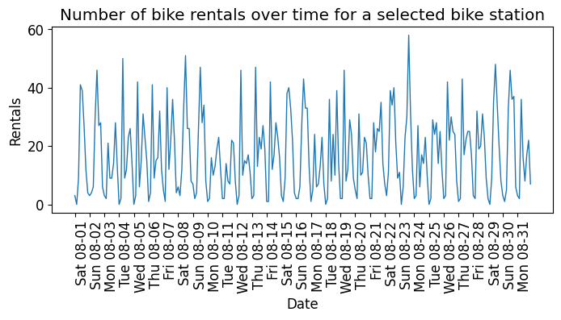
We see the day and night pattern
We see the weekend and weekday pattern
Questions you might want to answer: How many people are likely to rent a bike at this station in the next three hours given everything we know about rentals in the past?
We want to learn from the past and predict the future.
❓❓ Questions for you
- Can we use our usual supervised machine learning methodology to predict the number of people who will rent bicycles from a specific station at a given time and date?
- How can you adapt traditional machine learning methods for time series forecasting?
Train/test split for temporal data
- To evaluate the model’s ability to generalize, we will divide the data into training and testing subsets.
- What will happen if we split this data the usual way?
train_df, test_df = train_test_split(citibike, test_size=0.2, random_state=123)test_df.head()starttime
2015-08-26 12:00:00 30
2015-08-12 09:00:00 10
2015-08-19 03:00:00 2
2015-08-07 12:00:00 22
2015-08-03 09:00:00 9
Name: one, dtype: int64plt.figure(figsize=(10, 3))
train_df_sort = train_df.sort_index()
test_df_sort = test_df.sort_index()
plt.plot(train_df_sort, "b", label="train")
plt.plot(test_df_sort, "r", label="test")
plt.xticks(rotation="vertical")
plt.legend();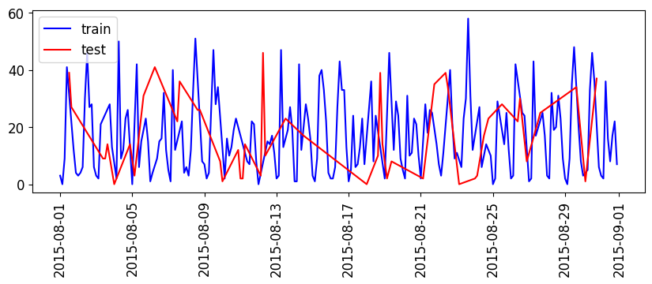
train_df.index.max()Timestamp('2015-08-31 21:00:00')test_df.index.min()Timestamp('2015-08-01 12:00:00')- So, we are training on data that came after our test data!
- If we want to forecast, we aren’t allowed to know what happened in the future!
- There may be cases where this is OK, e.g. if you aren’t trying to forecast and just want to understand your data (maybe you’re not even splitting).
- But, for our purposes, we want to avoid this.
We’ll split the data as follows:
- We have total 248 data points.
- We’ll use the fist 184 data points corresponding to the first 23 days as training data - And the remaining 64 data points corresponding to the remaining 8 days as test data.
citibike.shape(248,)n_train = 184
train_df = citibike[:184]
test_df = citibike[184:]plt.figure(figsize=(10, 3))
train_df_sort = train_df.sort_index()
test_df_sort = test_df.sort_index()
plt.plot(train_df_sort, "b", label="train")
plt.plot(test_df_sort, "r", label="test")
plt.xticks(rotation="vertical")
plt.legend();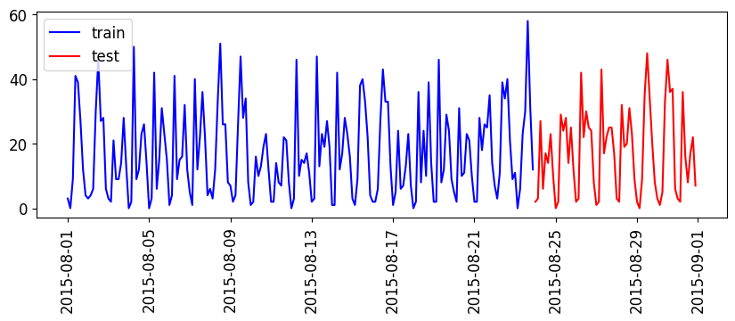
This split is looking reasonable now. We’ll train our model on the blue part and evaluate it on the red part.
train_dfstarttime
2015-08-01 00:00:00 3
2015-08-01 03:00:00 0
2015-08-01 06:00:00 9
2015-08-01 09:00:00 41
2015-08-01 12:00:00 39
..
2015-08-23 09:00:00 23
2015-08-23 12:00:00 30
2015-08-23 15:00:00 58
2015-08-23 18:00:00 31
2015-08-23 21:00:00 12
Freq: 3h, Name: one, Length: 184, dtype: int64Feature engineering for date/time columns
❓❓ Questions for you
- What kind of features would you create from time series data to use in a model like a random forest or SVM?
POSIX time feature
- In this toy data, we just have a single feature: the date time feature.
- We need to encode this feature if we want to build machine learning models.
- A common way that dates are stored on computers is using POSIX time, which is the number of seconds since January 1970 00:00:00 (this is beginning of Unix time).
- Let’s start with encoding this feature as a single integer representing this POSIX time.
X = (
citibike.index.astype("int64").values.reshape(-1, 1) // 10 ** 9
) # convert to POSIX time by dividing by 10**9
y = citibike.valuesgreusqdvuirb Note :class: note In pandas, datetime objects are typically represented as Timestamp objects, which internally store time as the number of nanoseconds (1 billionth of a second. 1 second = $10^9$ nanoseconds) since the POSIX epoch (January 1, 1970, 00:00:00 UTC).
y_train = train_df.values
y_test = test_df.values
# convert to POSIX time by dividing by 10**9
X_train = train_df.index.astype("int64").values.reshape(-1, 1) // 10 ** 9
X_test = test_df.index.astype("int64").values.reshape(-1, 1) // 10 ** 9X_train[:10]array([[1438387200],
[1438398000],
[1438408800],
[1438419600],
[1438430400],
[1438441200],
[1438452000],
[1438462800],
[1438473600],
[1438484400]])y_train[:10]array([ 3, 0, 9, 41, 39, 27, 12, 4, 3, 4])Our prediction task is a regression task.
Let’s try random forest regression with just this feature.
We’ll be trying out many different features. So we’ll be using the function below which
- Splits the data
- Trains the given regressor model on the training data
- Shows train and test scores
- Plots the predictions on the train and test data
# Code credit: Adapted from
# https://learning.oreilly.com/library/view/introduction-to-machine/9781449369880/
def eval_on_features(features, target, regressor, n_train=184, sales_data=False,
ylabel='Rentals',
feat_names="Default",
impute=True):
"""
Evaluate a regression model on a given set of features and target.
This function splits the data into training and test sets, fits the
regression model to the training data, and then evaluates and plots
the performance of the model on both the training and test datasets.
Parameters:
-----------
features : array-like
Input features for the model.
target : array-like
Target variable for the model.
regressor : model object
A regression model instance that follows the scikit-learn API.
n_train : int, default=184
The number of samples to be used in the training set.
sales_data : bool, default=False
Indicates if the data is sales data, which affects the plot ticks.
ylabel : str, default='Rentals'
The label for the y-axis in the plot.
feat_names : str, default='Default'
Names of the features used, for display in the plot title.
impute : bool, default=True
whether SimpleImputer needs to be applied or not
Returns:
--------
None
The function does not return any value. It prints the R^2 score
and generates a plot.
"""
# Split the features and target data into training and test sets
X_train, X_test = features[:n_train], features[n_train:]
y_train, y_test = target[:n_train], target[n_train:]
if impute:
simp = SimpleImputer()
X_train = simp.fit_transform(X_train)
X_test = simp.transform(X_test)
# Fit the model on the training data
regressor.fit(X_train, y_train)
# Print R^2 scores for training and test datasets
print("Train-set R^2: {:.2f}".format(regressor.score(X_train, y_train)))
print("Test-set R^2: {:.2f}".format(regressor.score(X_test, y_test)))
# Predict target variable for both training and test datasets
y_pred_train = regressor.predict(X_train)
y_pred = regressor.predict(X_test)
# Plotting
plt.figure(figsize=(10, 3))
# If not sales data, adjust x-ticks for dates (assumes datetime format)
if not sales_data:
plt.xticks(range(0, len(X), 8), xticks.strftime("%a %m-%d"), rotation=90, ha="left")
# Plot training and test data, along with predictions
plt.plot(range(n_train), y_train, label="train")
plt.plot(range(n_train, len(y_test) + n_train), y_test, "-", label="test")
plt.plot(range(n_train), y_pred_train, "--", label="prediction train")
plt.plot(range(n_train, len(y_test) + n_train), y_pred, "--", label="prediction test")
# Set plot title, labels, and legend
title = regressor.__class__.__name__ + "\n Features= " + feat_names
plt.title(title)
plt.legend(loc=(1.01, 0))
plt.xlabel("Date")
plt.ylabel(ylabel)Let’s try random forest regressor with our posix time feature.
from sklearn.ensemble import RandomForestRegressor
regressor = RandomForestRegressor(n_estimators=100, random_state=0)
eval_on_features(X, y, regressor, feat_names="POSIX time")Train-set R^2: 0.85
Test-set R^2: -0.04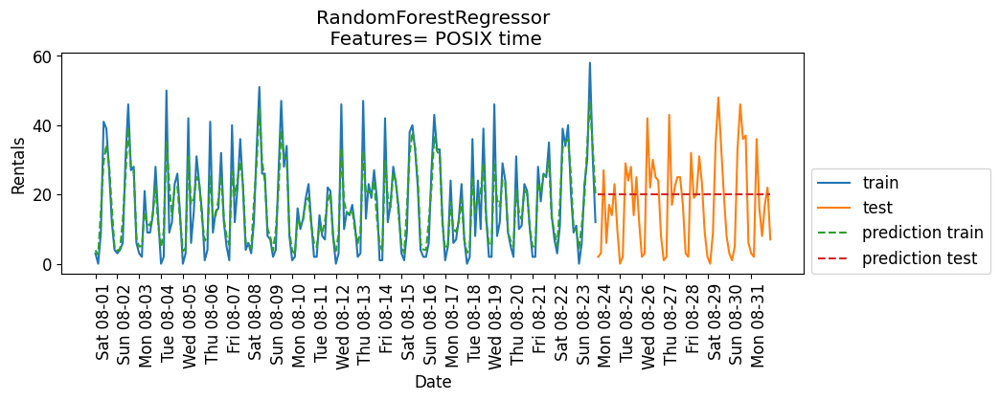
The predictions on the training data and training score are pretty good
But for the test data, a constant line is predicted …
What’s going on?
The model is based on only one feature: POSIX time feature.
And the value of the POSIX time feature is outside the range of the feature values in the training set.
Tree-based models cannot extrapolate to feature ranges outside the training data.
The model predicted the target value of the closest point in the training set.
Can we come up with better features?
Extracting date and time information
- Note that our index is of this special type:
DateTimeIndex. We can extract all kinds of interesting information from it.
citibike.indexDatetimeIndex(['2015-08-01 00:00:00', '2015-08-01 03:00:00',
'2015-08-01 06:00:00', '2015-08-01 09:00:00',
'2015-08-01 12:00:00', '2015-08-01 15:00:00',
'2015-08-01 18:00:00', '2015-08-01 21:00:00',
'2015-08-02 00:00:00', '2015-08-02 03:00:00',
...
'2015-08-30 18:00:00', '2015-08-30 21:00:00',
'2015-08-31 00:00:00', '2015-08-31 03:00:00',
'2015-08-31 06:00:00', '2015-08-31 09:00:00',
'2015-08-31 12:00:00', '2015-08-31 15:00:00',
'2015-08-31 18:00:00', '2015-08-31 21:00:00'],
dtype='datetime64[ns]', name='starttime', length=248, freq='3h')citibike.index.month_name()Index(['August', 'August', 'August', 'August', 'August', 'August', 'August',
'August', 'August', 'August',
...
'August', 'August', 'August', 'August', 'August', 'August', 'August',
'August', 'August', 'August'],
dtype='object', name='starttime', length=248)citibike.index.dayofweekIndex([5, 5, 5, 5, 5, 5, 5, 5, 6, 6,
...
6, 6, 0, 0, 0, 0, 0, 0, 0, 0],
dtype='int32', name='starttime', length=248)citibike.index.day_name()Index(['Saturday', 'Saturday', 'Saturday', 'Saturday', 'Saturday', 'Saturday',
'Saturday', 'Saturday', 'Sunday', 'Sunday',
...
'Sunday', 'Sunday', 'Monday', 'Monday', 'Monday', 'Monday', 'Monday',
'Monday', 'Monday', 'Monday'],
dtype='object', name='starttime', length=248)citibike.index.hourIndex([ 0, 3, 6, 9, 12, 15, 18, 21, 0, 3,
...
18, 21, 0, 3, 6, 9, 12, 15, 18, 21],
dtype='int32', name='starttime', length=248)- We noted before that the time of the day and day of the week seem quite important.
- Let’s add these two features.
Let’s first add the time of the day.
X_hour = citibike.index.hour.values.reshape(-1, 1)
X_hour[:10]array([[ 0],
[ 3],
[ 6],
[ 9],
[12],
[15],
[18],
[21],
[ 0],
[ 3]], dtype=int32)regressor = RandomForestRegressor(n_estimators=100, random_state=0)
eval_on_features(X_hour, y, regressor, feat_names = "Hour of the day")Train-set R^2: 0.50
Test-set R^2: 0.60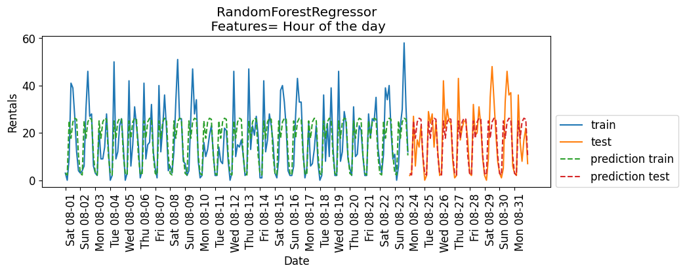
The scores are better when we add time of the day feature.
Now let’s add day of the week along with time of the day.
regressor = RandomForestRegressor(n_estimators=100, random_state=0)
X_hour_week = np.hstack(
[
citibike.index.dayofweek.values.reshape(-1, 1),
citibike.index.hour.values.reshape(-1, 1),
]
)
eval_on_features(X_hour_week, y, regressor, feat_names = "hour of day + day of week")Train-set R^2: 0.89
Test-set R^2: 0.84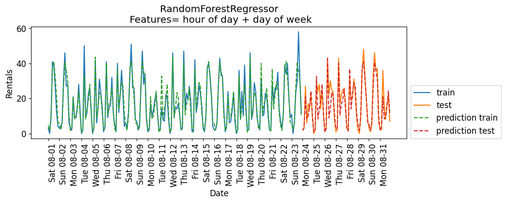
The results are much better. The time of the day and day of the week features are clearly helping.
- Do we need a complex model such as a random forest?
- Let’s try
Ridgewith these features.
from sklearn.linear_model import Ridge
lr = Ridge();
eval_on_features(X_hour_week, y, lr, feat_names = "hour of day + day of week")Train-set R^2: 0.16
Test-set R^2: 0.13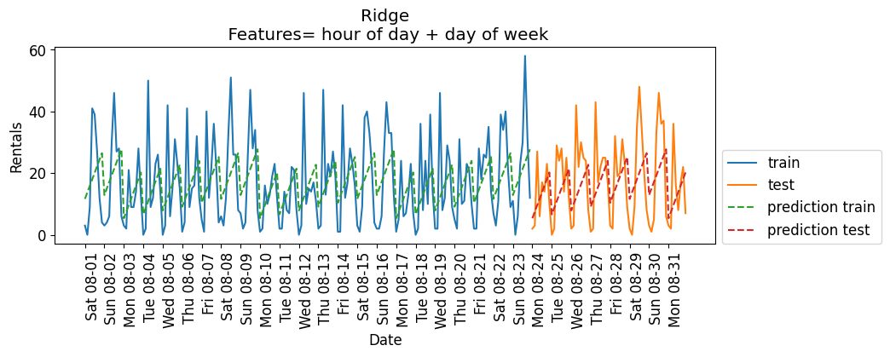
❓❓ Questions for you
- Why is
Ridgeperforming poorly on the training data as well as test data?
Encoding time of day as a categorical feature
Ridgeis performing poorly because it’s not able to capture the periodic pattern.- The reason is that we have encoded time of day using integers.
- A linear function can only learn a linear function of the time of day.
- What if we encode this feature as a categorical variable?
enc = OneHotEncoder()
X_hour_week_onehot = enc.fit_transform(X_hour_week).toarray()X_hour_week_onehot
X_hour_week_onehot.shape(248, 15)hour = ["%02d:00" % i for i in range(0, 24, 3)]
day = ["Mon", "Tue", "Wed", "Thu", "Fri", "Sat", "Sun"]
features = day + hourpd.DataFrame(X_hour_week_onehot, columns=features)| Mon | Tue | Wed | Thu | Fri | Sat | Sun | 00:00 | 03:00 | 06:00 | 09:00 | 12:00 | 15:00 | 18:00 | 21:00 | |
|---|---|---|---|---|---|---|---|---|---|---|---|---|---|---|---|
| 0 | 0.0 | 0.0 | 0.0 | 0.0 | 0.0 | 1.0 | 0.0 | 1.0 | 0.0 | 0.0 | 0.0 | 0.0 | 0.0 | 0.0 | 0.0 |
| 1 | 0.0 | 0.0 | 0.0 | 0.0 | 0.0 | 1.0 | 0.0 | 0.0 | 1.0 | 0.0 | 0.0 | 0.0 | 0.0 | 0.0 | 0.0 |
| 2 | 0.0 | 0.0 | 0.0 | 0.0 | 0.0 | 1.0 | 0.0 | 0.0 | 0.0 | 1.0 | 0.0 | 0.0 | 0.0 | 0.0 | 0.0 |
| 3 | 0.0 | 0.0 | 0.0 | 0.0 | 0.0 | 1.0 | 0.0 | 0.0 | 0.0 | 0.0 | 1.0 | 0.0 | 0.0 | 0.0 | 0.0 |
| 4 | 0.0 | 0.0 | 0.0 | 0.0 | 0.0 | 1.0 | 0.0 | 0.0 | 0.0 | 0.0 | 0.0 | 1.0 | 0.0 | 0.0 | 0.0 |
| ... | ... | ... | ... | ... | ... | ... | ... | ... | ... | ... | ... | ... | ... | ... | ... |
| 243 | 1.0 | 0.0 | 0.0 | 0.0 | 0.0 | 0.0 | 0.0 | 0.0 | 0.0 | 0.0 | 1.0 | 0.0 | 0.0 | 0.0 | 0.0 |
| 244 | 1.0 | 0.0 | 0.0 | 0.0 | 0.0 | 0.0 | 0.0 | 0.0 | 0.0 | 0.0 | 0.0 | 1.0 | 0.0 | 0.0 | 0.0 |
| 245 | 1.0 | 0.0 | 0.0 | 0.0 | 0.0 | 0.0 | 0.0 | 0.0 | 0.0 | 0.0 | 0.0 | 0.0 | 1.0 | 0.0 | 0.0 |
| 246 | 1.0 | 0.0 | 0.0 | 0.0 | 0.0 | 0.0 | 0.0 | 0.0 | 0.0 | 0.0 | 0.0 | 0.0 | 0.0 | 1.0 | 0.0 |
| 247 | 1.0 | 0.0 | 0.0 | 0.0 | 0.0 | 0.0 | 0.0 | 0.0 | 0.0 | 0.0 | 0.0 | 0.0 | 0.0 | 0.0 | 1.0 |
248 rows × 15 columns
eval_on_features(X_hour_week_onehot, y, Ridge(), feat_names="hour of day OHE + day of week OHE")Train-set R^2: 0.53
Test-set R^2: 0.62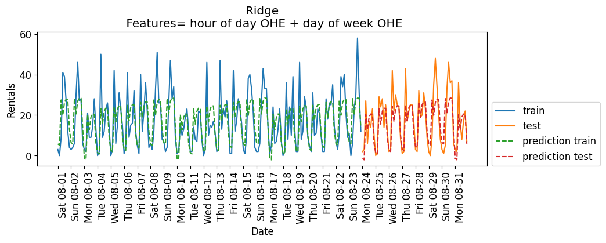
- The scores are a bit better now.
- What if we add interaction features (e.g., something like Day == Mon and hour == 9:00)
- We can do it using
sklearn’sPolynomialFeaturestransformer.
from sklearn.preprocessing import PolynomialFeatures
poly_transformer = PolynomialFeatures(
interaction_only=True, include_bias=False
)
X_hour_week_onehot_poly = poly_transformer.fit_transform(X_hour_week_onehot)hour = ["%02d:00" % i for i in range(0, 24, 3)]
day = ["Mon", "Tue", "Wed", "Thu", "Fri", "Sat", "Sun"]
features = day + hour
features_poly = poly_transformer.get_feature_names_out(features)
features_polyarray(['Mon', 'Tue', 'Wed', 'Thu', 'Fri', 'Sat', 'Sun', '00:00', '03:00',
'06:00', '09:00', '12:00', '15:00', '18:00', '21:00', 'Mon Tue',
'Mon Wed', 'Mon Thu', 'Mon Fri', 'Mon Sat', 'Mon Sun', 'Mon 00:00',
'Mon 03:00', 'Mon 06:00', 'Mon 09:00', 'Mon 12:00', 'Mon 15:00',
'Mon 18:00', 'Mon 21:00', 'Tue Wed', 'Tue Thu', 'Tue Fri',
'Tue Sat', 'Tue Sun', 'Tue 00:00', 'Tue 03:00', 'Tue 06:00',
'Tue 09:00', 'Tue 12:00', 'Tue 15:00', 'Tue 18:00', 'Tue 21:00',
'Wed Thu', 'Wed Fri', 'Wed Sat', 'Wed Sun', 'Wed 00:00',
'Wed 03:00', 'Wed 06:00', 'Wed 09:00', 'Wed 12:00', 'Wed 15:00',
'Wed 18:00', 'Wed 21:00', 'Thu Fri', 'Thu Sat', 'Thu Sun',
'Thu 00:00', 'Thu 03:00', 'Thu 06:00', 'Thu 09:00', 'Thu 12:00',
'Thu 15:00', 'Thu 18:00', 'Thu 21:00', 'Fri Sat', 'Fri Sun',
'Fri 00:00', 'Fri 03:00', 'Fri 06:00', 'Fri 09:00', 'Fri 12:00',
'Fri 15:00', 'Fri 18:00', 'Fri 21:00', 'Sat Sun', 'Sat 00:00',
'Sat 03:00', 'Sat 06:00', 'Sat 09:00', 'Sat 12:00', 'Sat 15:00',
'Sat 18:00', 'Sat 21:00', 'Sun 00:00', 'Sun 03:00', 'Sun 06:00',
'Sun 09:00', 'Sun 12:00', 'Sun 15:00', 'Sun 18:00', 'Sun 21:00',
'00:00 03:00', '00:00 06:00', '00:00 09:00', '00:00 12:00',
'00:00 15:00', '00:00 18:00', '00:00 21:00', '03:00 06:00',
'03:00 09:00', '03:00 12:00', '03:00 15:00', '03:00 18:00',
'03:00 21:00', '06:00 09:00', '06:00 12:00', '06:00 15:00',
'06:00 18:00', '06:00 21:00', '09:00 12:00', '09:00 15:00',
'09:00 18:00', '09:00 21:00', '12:00 15:00', '12:00 18:00',
'12:00 21:00', '15:00 18:00', '15:00 21:00', '18:00 21:00'],
dtype=object)df_hour_week_ohe_poly = pd.DataFrame(X_hour_week_onehot_poly, columns = features_poly)
df_hour_week_ohe_poly| Mon | Tue | Wed | Thu | Fri | Sat | Sun | 00:00 | 03:00 | 06:00 | ... | 09:00 12:00 | 09:00 15:00 | 09:00 18:00 | 09:00 21:00 | 12:00 15:00 | 12:00 18:00 | 12:00 21:00 | 15:00 18:00 | 15:00 21:00 | 18:00 21:00 | |
|---|---|---|---|---|---|---|---|---|---|---|---|---|---|---|---|---|---|---|---|---|---|
| 0 | 0.0 | 0.0 | 0.0 | 0.0 | 0.0 | 1.0 | 0.0 | 1.0 | 0.0 | 0.0 | ... | 0.0 | 0.0 | 0.0 | 0.0 | 0.0 | 0.0 | 0.0 | 0.0 | 0.0 | 0.0 |
| 1 | 0.0 | 0.0 | 0.0 | 0.0 | 0.0 | 1.0 | 0.0 | 0.0 | 1.0 | 0.0 | ... | 0.0 | 0.0 | 0.0 | 0.0 | 0.0 | 0.0 | 0.0 | 0.0 | 0.0 | 0.0 |
| 2 | 0.0 | 0.0 | 0.0 | 0.0 | 0.0 | 1.0 | 0.0 | 0.0 | 0.0 | 1.0 | ... | 0.0 | 0.0 | 0.0 | 0.0 | 0.0 | 0.0 | 0.0 | 0.0 | 0.0 | 0.0 |
| 3 | 0.0 | 0.0 | 0.0 | 0.0 | 0.0 | 1.0 | 0.0 | 0.0 | 0.0 | 0.0 | ... | 0.0 | 0.0 | 0.0 | 0.0 | 0.0 | 0.0 | 0.0 | 0.0 | 0.0 | 0.0 |
| 4 | 0.0 | 0.0 | 0.0 | 0.0 | 0.0 | 1.0 | 0.0 | 0.0 | 0.0 | 0.0 | ... | 0.0 | 0.0 | 0.0 | 0.0 | 0.0 | 0.0 | 0.0 | 0.0 | 0.0 | 0.0 |
| ... | ... | ... | ... | ... | ... | ... | ... | ... | ... | ... | ... | ... | ... | ... | ... | ... | ... | ... | ... | ... | ... |
| 243 | 1.0 | 0.0 | 0.0 | 0.0 | 0.0 | 0.0 | 0.0 | 0.0 | 0.0 | 0.0 | ... | 0.0 | 0.0 | 0.0 | 0.0 | 0.0 | 0.0 | 0.0 | 0.0 | 0.0 | 0.0 |
| 244 | 1.0 | 0.0 | 0.0 | 0.0 | 0.0 | 0.0 | 0.0 | 0.0 | 0.0 | 0.0 | ... | 0.0 | 0.0 | 0.0 | 0.0 | 0.0 | 0.0 | 0.0 | 0.0 | 0.0 | 0.0 |
| 245 | 1.0 | 0.0 | 0.0 | 0.0 | 0.0 | 0.0 | 0.0 | 0.0 | 0.0 | 0.0 | ... | 0.0 | 0.0 | 0.0 | 0.0 | 0.0 | 0.0 | 0.0 | 0.0 | 0.0 | 0.0 |
| 246 | 1.0 | 0.0 | 0.0 | 0.0 | 0.0 | 0.0 | 0.0 | 0.0 | 0.0 | 0.0 | ... | 0.0 | 0.0 | 0.0 | 0.0 | 0.0 | 0.0 | 0.0 | 0.0 | 0.0 | 0.0 |
| 247 | 1.0 | 0.0 | 0.0 | 0.0 | 0.0 | 0.0 | 0.0 | 0.0 | 0.0 | 0.0 | ... | 0.0 | 0.0 | 0.0 | 0.0 | 0.0 | 0.0 | 0.0 | 0.0 | 0.0 | 0.0 |
248 rows × 120 columns
X_hour_week_onehot_poly.shape(248, 120)lr = Ridge()
eval_on_features(X_hour_week_onehot_poly, y, lr, feat_names = "hour of day OHE + day of week OHE + interaction feats")Train-set R^2: 0.87
Test-set R^2: 0.85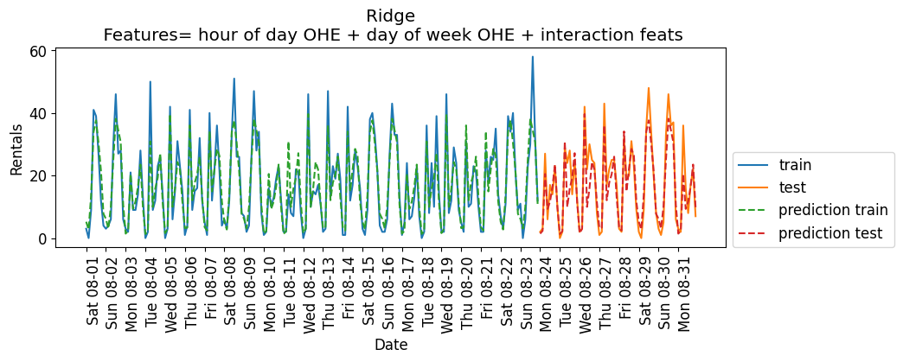
The scores are much better now. Since we are using a linear model, we can examine the coefficients learned by Ridge.
features_nonzero = np.array(features_poly)[lr.coef_ != 0]
coef_nonzero = lr.coef_[lr.coef_ != 0]pd.DataFrame(coef_nonzero, index=features_nonzero, columns=["Coefficient"]).sort_values(
"Coefficient", ascending=False
)| Coefficient | |
|---|---|
| Sat 09:00 | 15.196739 |
| Wed 06:00 | 15.005809 |
| Sat 12:00 | 13.437684 |
| Sun 12:00 | 13.362009 |
| Thu 06:00 | 10.907595 |
| ... | ... |
| Sat 21:00 | -6.085150 |
| 00:00 | -11.693898 |
| 03:00 | -12.111220 |
| Sat 06:00 | -13.757591 |
| Sun 06:00 | -18.033267 |
71 rows × 1 columns
- The coefficients make sense!
- If it’s Saturday 09:00 or Wednesday 06:00, the model is likely to predict bigger number for rentals.
- If it’s Midnight or 03:00 or Sunday 06:00, the model is likely to predict smaller number for rentals.
Interim summary
- Success in time-series analysis heavily relies on the appropriate choice of models and features.
- Tree-based models cannot extrapolate; caution is needed when using them with linear integer features.
- Linear models struggle with cyclic patterns in numeric features (e.g., numerically encoded time of the day feature) because these patterns are inherently non-linear.
- Applying one-hot encoding on such features transforms cyclic temporal features into a format where their impact on the target variable can be independently and linearly modeled, enabling linear models to effectively capture and use these cyclic patterns.
Lag-based features
- So far we engineered some features and managed to get reasonable results.
- In time series data there is temporal dependence; observations close in time tend to be correlated.
- Currently we’re using current time to predict the number of bike rentals in the next three hours.
- But, what if the number of bike rentals is also related to bike rentals three hours ago or 6 hours ago and so on?
- Such features are called lagged features.
Note: In time series analysis, you would look at something called an autocorrelation function (ACF), but we won’t go into that here.
Let’s extract lag features. We can “lag” (or “shift”) a time series in Pandas with the .shift() method.
citibikestarttime
2015-08-01 00:00:00 3
2015-08-01 03:00:00 0
2015-08-01 06:00:00 9
2015-08-01 09:00:00 41
2015-08-01 12:00:00 39
..
2015-08-31 09:00:00 16
2015-08-31 12:00:00 8
2015-08-31 15:00:00 17
2015-08-31 18:00:00 22
2015-08-31 21:00:00 7
Freq: 3h, Name: one, Length: 248, dtype: int64rentals_df = pd.DataFrame(citibike)
rentals_df = rentals_df.rename(columns={"one":"n_rentals"})
rentals_df| n_rentals | |
|---|---|
| starttime | |
| 2015-08-01 00:00:00 | 3 |
| 2015-08-01 03:00:00 | 0 |
| 2015-08-01 06:00:00 | 9 |
| 2015-08-01 09:00:00 | 41 |
| 2015-08-01 12:00:00 | 39 |
| ... | ... |
| 2015-08-31 09:00:00 | 16 |
| 2015-08-31 12:00:00 | 8 |
| 2015-08-31 15:00:00 | 17 |
| 2015-08-31 18:00:00 | 22 |
| 2015-08-31 21:00:00 | 7 |
248 rows × 1 columns
def create_lag_df(df, lag, cols):
return df.assign(
**{f"{col}-{n}": df[col].shift(n) for n in range(1, lag + 1) for col in cols}
)rentals_lag5 = create_lag_df(rentals_df, 5, ['n_rentals'] )rentals_lag5| n_rentals | n_rentals-1 | n_rentals-2 | n_rentals-3 | n_rentals-4 | n_rentals-5 | |
|---|---|---|---|---|---|---|
| starttime | ||||||
| 2015-08-01 00:00:00 | 3 | NaN | NaN | NaN | NaN | NaN |
| 2015-08-01 03:00:00 | 0 | 3.0 | NaN | NaN | NaN | NaN |
| 2015-08-01 06:00:00 | 9 | 0.0 | 3.0 | NaN | NaN | NaN |
| 2015-08-01 09:00:00 | 41 | 9.0 | 0.0 | 3.0 | NaN | NaN |
| 2015-08-01 12:00:00 | 39 | 41.0 | 9.0 | 0.0 | 3.0 | NaN |
| ... | ... | ... | ... | ... | ... | ... |
| 2015-08-31 09:00:00 | 16 | 36.0 | 2.0 | 3.0 | 6.0 | 37.0 |
| 2015-08-31 12:00:00 | 8 | 16.0 | 36.0 | 2.0 | 3.0 | 6.0 |
| 2015-08-31 15:00:00 | 17 | 8.0 | 16.0 | 36.0 | 2.0 | 3.0 |
| 2015-08-31 18:00:00 | 22 | 17.0 | 8.0 | 16.0 | 36.0 | 2.0 |
| 2015-08-31 21:00:00 | 7 | 22.0 | 17.0 | 8.0 | 16.0 | 36.0 |
248 rows × 6 columns
- Note the NaN pattern.
- We can either drop the first 5 rows or apply imputation. (You have to be careful about )
- Let’s try these features with
Ridgemodel.
X_lag_features = rentals_lag5.drop(columns = ['n_rentals']).to_numpy()
X_lag_featuresarray([[nan, nan, nan, nan, nan],
[ 3., nan, nan, nan, nan],
[ 0., 3., nan, nan, nan],
...,
[ 8., 16., 36., 2., 3.],
[17., 8., 16., 36., 2.],
[22., 17., 8., 16., 36.]], shape=(248, 5))lr = Ridge()
eval_on_features(X_lag_features, y, lr, feat_names="Lag features", impute="yes")Train-set R^2: 0.25
Test-set R^2: 0.37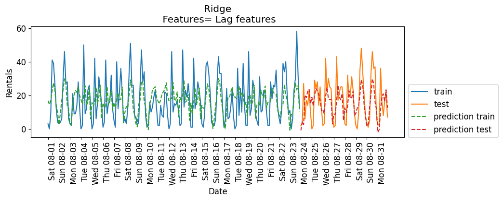
The results are not great. But let’s examine the coefficients.
features_lag = rentals_lag5.drop(columns=['n_rentals']).columns.tolist()
features_nonzero = np.array(features_lag)[lr.coef_ != 0]
coef_nonzero = lr.coef_[lr.coef_ != 0]pd.DataFrame(coef_nonzero, index=features_nonzero, columns=["Coefficient"]).sort_values(
"Coefficient", ascending=False
)| Coefficient | |
|---|---|
| n_rentals-1 | 0.165617 |
| n_rentals-4 | -0.048630 |
| n_rentals-2 | -0.214821 |
| n_rentals-3 | -0.258225 |
| n_rentals-5 | -0.373656 |
How about RandomForestRegressor model?
imp = SimpleImputer()
X_lag_features_imp = imp.fit_transform(X_lag_features)
rf = RandomForestRegressor()
eval_on_features(X_lag_features_imp, y, rf, feat_names="Lag features")Train-set R^2: 0.94
Test-set R^2: 0.70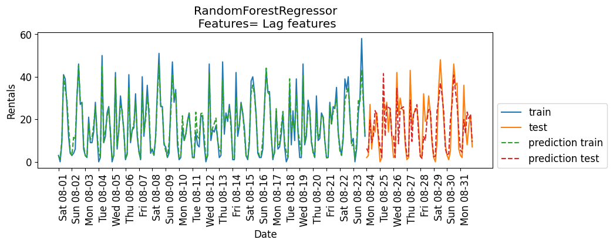
The results are better than Ridge with lag features but they are not as good as the results with our previously engineered features. How about combining lag-based features and the previously extracted features?
X_hour_week_onehot_poly_lag = np.hstack([X_hour_week_onehot_poly, X_lag_features])rf = RandomForestRegressor()
eval_on_features(X_hour_week_onehot_poly_lag, y, rf, feat_names = "hour of day OHE + day of week OHE + interaction feats + Lag feats")Train-set R^2: 0.95
Test-set R^2: 0.79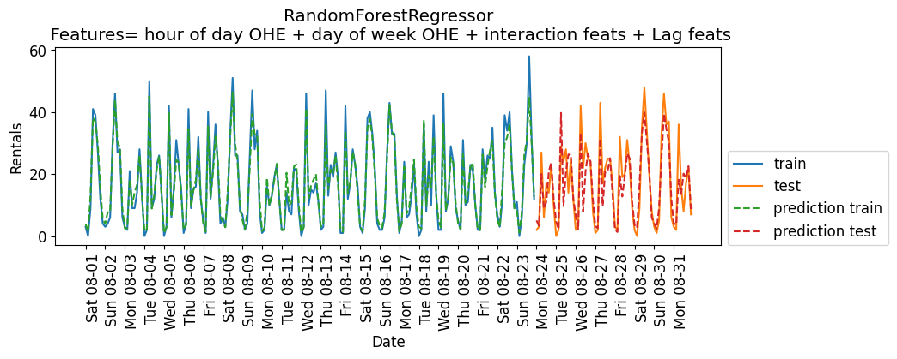
Some improvement but we are getting better results without the lag features in this case.
Cross-validation
What about cross-validation?
- We can’t do regular cross-validation if we don’t want to be predicting the past.
- If you carry out regular cross-validation, as shown below, you’ll be predicting the past given future which is not a realistic scenario for the deployment data.
mglearn.plots.plot_cross_validation()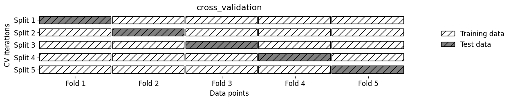
There is TimeSeriesSplit for time series data.
from sklearn.model_selection import TimeSeriesSplit# Code from sklearn documentation
X_toy = np.array([[1, 2], [3, 4], [1, 2], [3, 4], [1, 2], [3, 4]])
y_toy = np.array([1, 2, 3, 4, 5, 6])
tscv = TimeSeriesSplit(n_splits=3)
for train, test in tscv.split(X_toy):
print("%s %s" % (train, test))[0 1 2] [3]
[0 1 2 3] [4]
[0 1 2 3 4] [5]Let’s try it out with Ridge on the bike rental data.
lr = Ridge()scores = cross_validate(
lr, X_hour_week_onehot_poly, y, cv=TimeSeriesSplit(), return_train_score=True
)
pd.DataFrame(scores)| fit_time | score_time | test_score | train_score | |
|---|---|---|---|---|
| 0 | 0.002372 | 0.000892 | 0.642676 | 0.873182 |
| 1 | 0.012604 | 0.000364 | 0.828405 | 0.874305 |
| 2 | 0.000765 | 0.000206 | 0.773851 | 0.901262 |
| 3 | 0.000670 | 0.000188 | 0.696712 | 0.889429 |
| 4 | 0.000748 | 0.000280 | 0.892733 | 0.863889 |
Forecasting further into the future
Recall that we are working with the bike rentals data from August 2015.
citibikestarttime
2015-08-01 00:00:00 3
2015-08-01 03:00:00 0
2015-08-01 06:00:00 9
2015-08-01 09:00:00 41
2015-08-01 12:00:00 39
..
2015-08-31 09:00:00 16
2015-08-31 12:00:00 8
2015-08-31 15:00:00 17
2015-08-31 18:00:00 22
2015-08-31 21:00:00 7
Freq: 3h, Name: one, Length: 248, dtype: int64Here is our data with lag features.
rentals_lag5| n_rentals | n_rentals-1 | n_rentals-2 | n_rentals-3 | n_rentals-4 | n_rentals-5 | |
|---|---|---|---|---|---|---|
| starttime | ||||||
| 2015-08-01 00:00:00 | 3 | NaN | NaN | NaN | NaN | NaN |
| 2015-08-01 03:00:00 | 0 | 3.0 | NaN | NaN | NaN | NaN |
| 2015-08-01 06:00:00 | 9 | 0.0 | 3.0 | NaN | NaN | NaN |
| 2015-08-01 09:00:00 | 41 | 9.0 | 0.0 | 3.0 | NaN | NaN |
| 2015-08-01 12:00:00 | 39 | 41.0 | 9.0 | 0.0 | 3.0 | NaN |
| ... | ... | ... | ... | ... | ... | ... |
| 2015-08-31 09:00:00 | 16 | 36.0 | 2.0 | 3.0 | 6.0 | 37.0 |
| 2015-08-31 12:00:00 | 8 | 16.0 | 36.0 | 2.0 | 3.0 | 6.0 |
| 2015-08-31 15:00:00 | 17 | 8.0 | 16.0 | 36.0 | 2.0 | 3.0 |
| 2015-08-31 18:00:00 | 22 | 17.0 | 8.0 | 16.0 | 36.0 | 2.0 |
| 2015-08-31 21:00:00 | 7 | 22.0 | 17.0 | 8.0 | 16.0 | 36.0 |
248 rows × 6 columns
Let’s impute the data and create X and y
imp = SimpleImputer()
X_lag_features_imp = imp.fit_transform(X_lag_features)rentals_lag5_X = pd.DataFrame(X_lag_features_imp, columns=rentals_lag5.drop(columns=['n_rentals']).columns)
rentals_lag5_X.index = rentals_lag5.index
rentals_lag5_X| n_rentals-1 | n_rentals-2 | n_rentals-3 | n_rentals-4 | n_rentals-5 | |
|---|---|---|---|---|---|
| starttime | |||||
| 2015-08-01 00:00:00 | 17.024291 | 17.004065 | 17.004082 | 17.040984 | 17.045267 |
| 2015-08-01 03:00:00 | 3.000000 | 17.004065 | 17.004082 | 17.040984 | 17.045267 |
| 2015-08-01 06:00:00 | 0.000000 | 3.000000 | 17.004082 | 17.040984 | 17.045267 |
| 2015-08-01 09:00:00 | 9.000000 | 0.000000 | 3.000000 | 17.040984 | 17.045267 |
| 2015-08-01 12:00:00 | 41.000000 | 9.000000 | 0.000000 | 3.000000 | 17.045267 |
| ... | ... | ... | ... | ... | ... |
| 2015-08-31 09:00:00 | 36.000000 | 2.000000 | 3.000000 | 6.000000 | 37.000000 |
| 2015-08-31 12:00:00 | 16.000000 | 36.000000 | 2.000000 | 3.000000 | 6.000000 |
| 2015-08-31 15:00:00 | 8.000000 | 16.000000 | 36.000000 | 2.000000 | 3.000000 |
| 2015-08-31 18:00:00 | 17.000000 | 8.000000 | 16.000000 | 36.000000 | 2.000000 |
| 2015-08-31 21:00:00 | 22.000000 | 17.000000 | 8.000000 | 16.000000 | 36.000000 |
248 rows × 5 columns
rentals_lag5_y = rentals_lag5['n_rentals']Let’s split the data and train a linear model.
# split the given features into a training and a test set
n_train = 184
X_train, X_test = rentals_lag5_X[:n_train], rentals_lag5_X[n_train:]
# also split the target array
y_train, y_test = rentals_lag5_y[:n_train], rentals_lag5_y[n_train:]rentals_model = RandomForestRegressor(random_state=42)
rentals_model.fit(X_train, y_train);
print("Train-set R^2: {:.2f}".format(rentals_model.score(X_train, y_train)))
print("Test-set R^2: {:.2f}".format(rentals_model.score(X_test, y_test)))Train-set R^2: 0.94
Test-set R^2: 0.68Given this, we can now predict n_rentals on the test data.
X_test| n_rentals-1 | n_rentals-2 | n_rentals-3 | n_rentals-4 | n_rentals-5 | |
|---|---|---|---|---|---|
| starttime | |||||
| 2015-08-24 00:00:00 | 12.0 | 31.0 | 58.0 | 30.0 | 23.0 |
| 2015-08-24 03:00:00 | 2.0 | 12.0 | 31.0 | 58.0 | 30.0 |
| 2015-08-24 06:00:00 | 3.0 | 2.0 | 12.0 | 31.0 | 58.0 |
| 2015-08-24 09:00:00 | 27.0 | 3.0 | 2.0 | 12.0 | 31.0 |
| 2015-08-24 12:00:00 | 6.0 | 27.0 | 3.0 | 2.0 | 12.0 |
| ... | ... | ... | ... | ... | ... |
| 2015-08-31 09:00:00 | 36.0 | 2.0 | 3.0 | 6.0 | 37.0 |
| 2015-08-31 12:00:00 | 16.0 | 36.0 | 2.0 | 3.0 | 6.0 |
| 2015-08-31 15:00:00 | 8.0 | 16.0 | 36.0 | 2.0 | 3.0 |
| 2015-08-31 18:00:00 | 17.0 | 8.0 | 16.0 | 36.0 | 2.0 |
| 2015-08-31 21:00:00 | 22.0 | 17.0 | 8.0 | 16.0 | 36.0 |
64 rows × 5 columns
preds = rentals_model.predict(X_test)
predsarray([ 6.36, 4.73, 16.84, 8.71, 13. , 24.34, 23.91, 12.07, 5.44,
2.11, 42.31, 11.64, 28.09, 26.46, 25.41, 12.28, 11.89, 2.01,
34.5 , 8.34, 23.94, 25.2 , 26.63, 11.02, 2.67, 2.71, 26.72,
9.96, 24.42, 23.05, 26.79, 14.17, 3.22, 1.51, 9.15, 8.83,
21.12, 24.7 , 25.23, 10.04, 2.21, 2.29, 22.45, 28.03, 36.14,
32.83, 21.45, 5.8 , 3.43, 3.18, 21.72, 26.23, 40.37, 34.84,
27.67, 14.79, 5.44, 4.45, 20.19, 14.49, 23.06, 20.34, 23.02,
10.11])X_test_preds = X_test.assign(predicted_n_rentals=preds)
X_test_preds = X_test_preds.assign(n_rentals=y_test)
X_test_preds.tail()| n_rentals-1 | n_rentals-2 | n_rentals-3 | n_rentals-4 | n_rentals-5 | predicted_n_rentals | n_rentals | |
|---|---|---|---|---|---|---|---|
| starttime | |||||||
| 2015-08-31 09:00:00 | 36.0 | 2.0 | 3.0 | 6.0 | 37.0 | 14.49 | 16 |
| 2015-08-31 12:00:00 | 16.0 | 36.0 | 2.0 | 3.0 | 6.0 | 23.06 | 8 |
| 2015-08-31 15:00:00 | 8.0 | 16.0 | 36.0 | 2.0 | 3.0 | 20.34 | 17 |
| 2015-08-31 18:00:00 | 17.0 | 8.0 | 16.0 | 36.0 | 2.0 | 23.02 | 22 |
| 2015-08-31 21:00:00 | 22.0 | 17.0 | 8.0 | 16.0 | 36.0 | 10.11 | 7 |
- Ok, that is fine, but what if we want to predict 15 hours in the future? In other words, what if we want to predict number of rentals for the next three hours at time 2015-09-01 12:00:00?
- Well, we would not have access to our lag features!! We don’t yet know
n_rentalsfor- 2015-09-01 00:00:00
- 2015-09-01 03:00:00
- 2015-09-01 06:00:00
- 2015-09-01 09:00:00
There are a few approaches which could be employed: 1. Train a separate model for each number of 3-hour span. E.g. one model that predicts n_rentals for next three hours, another model that predicts n_rentals in six hours, etc. We can build these datasets. 2. Use a multi-output model that jointly predicts n_rentalsIn3hours, n_rentalsIn6hours, etc. However, multi-output models are outside the scope of CPSC 330. 3. Use one model and sequentially predict using a for loop.
If we decide to use approach 3, we would predict these values and then pretend they are true! For example, given that it’s August 31st 2015 at 21:00.
- Predict
n_rentalsfor September 1st 2015 at 00:00. - Then to predict
n_rentalsfor September 1st 2015 at 03:00, we need to known_rentalsfor September 1st 2015 at 00:00. Use our prediction for September 1st 2015 at 00:00 as the truth. - Then, to predict
n_rentalsfor September 1st 2015 at 06:00, we need to known_rentalsfor September 1st 2015 at 00:00 andn_rentalsfor September 1st 2015 at 03:00. Use our predictions. - Etc etc.
Forecasting further into the future on a retail dataset
Let’s consider another time series dataset, Retail Sales of Clothing and Clothing Accessory Stores dataset which is made available by the Federal Reserve Bank of St. Louis.
The dataset has dates and retail sales values corresponding to the dates.
retail_df = pd.read_csv(DATA_DIR + "MRTSSM448USN.csv", parse_dates=["DATE"])
retail_df.columns = ["date", "sales"]retail_df.head()| date | sales | |
|---|---|---|
| 0 | 1992-01-01 | 6938 |
| 1 | 1992-02-01 | 7524 |
| 2 | 1992-03-01 | 8475 |
| 3 | 1992-04-01 | 9401 |
| 4 | 1992-05-01 | 9558 |
Let’s examine the min and max dates in order to split the data.
retail_df["date"].min()Timestamp('1992-01-01 00:00:00')retail_df["date"].max()Timestamp('2022-09-01 00:00:00')I’m considering everything upto 01 January 2016 as training data and everything after that as test data.
retail_df_train = retail_df.query("date <= 20160101")
retail_df_test = retail_df.query("date > 20160101")retail_df_train.plot(x="date", y="sales", figsize=(15, 5));
We can create a dataset using purely lag features.
def lag_df(df, lag, cols):
return df.assign(
**{f"{col}-{n}": df[col].shift(n) for n in range(1, lag + 1) for col in cols}
)Let’s create lag features for the full dataframe.
retail_lag_5 = lag_df(retail_df, 5, ["sales"])retail_train_5 = retail_lag_5.query("date <= 20160101")
retail_test_5 = retail_lag_5.query("date > 20160101")
retail_train_5| date | sales | sales-1 | sales-2 | sales-3 | sales-4 | sales-5 | |
|---|---|---|---|---|---|---|---|
| 0 | 1992-01-01 | 6938 | NaN | NaN | NaN | NaN | NaN |
| 1 | 1992-02-01 | 7524 | 6938.0 | NaN | NaN | NaN | NaN |
| 2 | 1992-03-01 | 8475 | 7524.0 | 6938.0 | NaN | NaN | NaN |
| 3 | 1992-04-01 | 9401 | 8475.0 | 7524.0 | 6938.0 | NaN | NaN |
| 4 | 1992-05-01 | 9558 | 9401.0 | 8475.0 | 7524.0 | 6938.0 | NaN |
| ... | ... | ... | ... | ... | ... | ... | ... |
| 284 | 2015-09-01 | 19266 | 22452.0 | 20694.0 | 19781.0 | 22260.0 | 20485.0 |
| 285 | 2015-10-01 | 20794 | 19266.0 | 22452.0 | 20694.0 | 19781.0 | 22260.0 |
| 286 | 2015-11-01 | 23175 | 20794.0 | 19266.0 | 22452.0 | 20694.0 | 19781.0 |
| 287 | 2015-12-01 | 33590 | 23175.0 | 20794.0 | 19266.0 | 22452.0 | 20694.0 |
| 288 | 2016-01-01 | 15775 | 33590.0 | 23175.0 | 20794.0 | 19266.0 | 22452.0 |
289 rows × 7 columns
- Now, if we drop the “date” column we have a target (“sales”) and 5 features (the previous 5 days of sales).
- We need to impute/drop the missing values and then we can fit a model to this. I will just drop for convenience:
retail_train_5 = retail_train_5[5:].drop(columns=["date"])
retail_train_5| sales | sales-1 | sales-2 | sales-3 | sales-4 | sales-5 | |
|---|---|---|---|---|---|---|
| 5 | 9182 | 9558.0 | 9401.0 | 8475.0 | 7524.0 | 6938.0 |
| 6 | 9103 | 9182.0 | 9558.0 | 9401.0 | 8475.0 | 7524.0 |
| 7 | 10513 | 9103.0 | 9182.0 | 9558.0 | 9401.0 | 8475.0 |
| 8 | 9573 | 10513.0 | 9103.0 | 9182.0 | 9558.0 | 9401.0 |
| 9 | 10254 | 9573.0 | 10513.0 | 9103.0 | 9182.0 | 9558.0 |
| ... | ... | ... | ... | ... | ... | ... |
| 284 | 19266 | 22452.0 | 20694.0 | 19781.0 | 22260.0 | 20485.0 |
| 285 | 20794 | 19266.0 | 22452.0 | 20694.0 | 19781.0 | 22260.0 |
| 286 | 23175 | 20794.0 | 19266.0 | 22452.0 | 20694.0 | 19781.0 |
| 287 | 33590 | 23175.0 | 20794.0 | 19266.0 | 22452.0 | 20694.0 |
| 288 | 15775 | 33590.0 | 23175.0 | 20794.0 | 19266.0 | 22452.0 |
284 rows × 6 columns
retail_train_5_X = retail_train_5.drop(columns=["sales"])
retail_train_5_y = retail_train_5["sales"]retail_model = RandomForestRegressor(random_state=42)
retail_model.fit(retail_train_5_X, retail_train_5_y);
print("Train-set R^2: {:.2f}".format(retail_model.score(retail_train_5_X, retail_train_5_y)))Train-set R^2: 0.96Given this, we can now predict the sales
retail_test_5| date | sales | sales-1 | sales-2 | sales-3 | sales-4 | sales-5 | |
|---|---|---|---|---|---|---|---|
| 289 | 2016-02-01 | 19032 | 15775.0 | 33590.0 | 23175.0 | 20794.0 | 19266.0 |
| 290 | 2016-03-01 | 21581 | 19032.0 | 15775.0 | 33590.0 | 23175.0 | 20794.0 |
| 291 | 2016-04-01 | 20514 | 21581.0 | 19032.0 | 15775.0 | 33590.0 | 23175.0 |
| 292 | 2016-05-01 | 21774 | 20514.0 | 21581.0 | 19032.0 | 15775.0 | 33590.0 |
| 293 | 2016-06-01 | 20274 | 21774.0 | 20514.0 | 21581.0 | 19032.0 | 15775.0 |
| ... | ... | ... | ... | ... | ... | ... | ... |
| 364 | 2022-05-01 | 26831 | 25904.0 | 25622.0 | 20509.0 | 18113.0 | 39375.0 |
| 365 | 2022-06-01 | 25031 | 26831.0 | 25904.0 | 25622.0 | 20509.0 | 18113.0 |
| 366 | 2022-07-01 | 25214 | 25031.0 | 26831.0 | 25904.0 | 25622.0 | 20509.0 |
| 367 | 2022-08-01 | 26376 | 25214.0 | 25031.0 | 26831.0 | 25904.0 | 25622.0 |
| 368 | 2022-09-01 | 23941 | 26376.0 | 25214.0 | 25031.0 | 26831.0 | 25904.0 |
80 rows × 7 columns
preds = retail_model.predict(retail_test_5.drop(columns=["date", "sales"]))
predsarray([17896.8 , 21694.77, 21603.92, 21847.23, 21405.8 , 20564.86,
22154.04, 26063.73, 21389.05, 22320.42, 30167.05, 16153.78,
18096.6 , 20310.9 , 21353.73, 22826.97, 21697.73, 21549.23,
21768.07, 27206.55, 21571.78, 22057.72, 28953.14, 16160.1 ,
18000.99, 21596.28, 22910.96, 22225.52, 28327.52, 20620.57,
22114.07, 30279.79, 21605.25, 21668.73, 18313.24, 16153.78,
18245.22, 20319.6 , 23290.45, 22788.29, 28362.34, 22219.81,
21530.08, 29881.14, 21617.54, 21670.38, 19380.36, 16157.83,
18955.53, 22078.43, 13107.93, 11057.81, 10910.98, 15429.94,
13255.13, 10868.94, 18311.55, 21274.73, 23902.03, 14813.7 ,
17518.48, 18533.12, 30146.97, 29691.79, 15661.24, 27638.52,
19365.48, 25176. , 27021.21, 28854.11, 15915.6 , 16358.48,
20334.54, 22550.67, 18116.77, 17144.95, 16533.7 , 25037.25,
19365.48, 17205.11])retail_test_5_preds = retail_test_5.assign(predicted_sales=preds)
retail_test_5_preds.tail()| date | sales | sales-1 | sales-2 | sales-3 | sales-4 | sales-5 | predicted_sales | |
|---|---|---|---|---|---|---|---|---|
| 364 | 2022-05-01 | 26831 | 25904.0 | 25622.0 | 20509.0 | 18113.0 | 39375.0 | 17144.95 |
| 365 | 2022-06-01 | 25031 | 26831.0 | 25904.0 | 25622.0 | 20509.0 | 18113.0 | 16533.70 |
| 366 | 2022-07-01 | 25214 | 25031.0 | 26831.0 | 25904.0 | 25622.0 | 20509.0 | 25037.25 |
| 367 | 2022-08-01 | 26376 | 25214.0 | 25031.0 | 26831.0 | 25904.0 | 25622.0 | 19365.48 |
| 368 | 2022-09-01 | 23941 | 26376.0 | 25214.0 | 25031.0 | 26831.0 | 25904.0 | 17205.11 |
- Now what if we want to predict 5 months in the future?
- We would not have access to our features!! We don’t yet know the previous months sales, or two months prior!
If we decide to use approach 3 from above, we would predict these values and then pretend they are true! For example, given that it’s November 2022
- Predict December 2022 sales
- Then, to predict for January 2023, we need to know December 2022 sales. Use our prediction for December 2022 as the truth.
- Then, to predict for February 2023, we need to know December 2022 and January 2023 sales. Use our predictions.
- Etc etc.
Seasonality and trends
- There are some important concepts in time series that rely on having a continuous target (like we do in the retail sales example above).
- Part of that is the idea of seasonality and trends.
- These are mostly taken care of by our feature engineering of the data variable, but there’s something important left to discuss.
retail_df_train.plot(x="date", y="sales", figsize=(15, 5));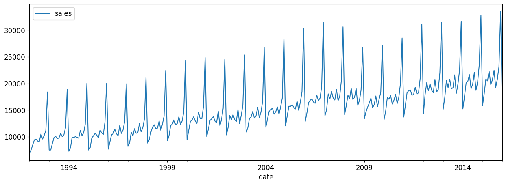
- It looks like there’s a trend here - the sales are going up over time.
Let’s say we encoded the date as a feature in days like this:
retail_train_5_date = retail_lag_5.query("date <= 20160101")
first_day_retail = retail_train_5_date["date"].min()
retail_train_5_date = retail_train_5_date.assign(
Days_since=retail_train_5_date["date"].apply(lambda x: (x - first_day_retail).days)
)
retail_train_5_date.head(10)| date | sales | sales-1 | sales-2 | sales-3 | sales-4 | sales-5 | Days_since | |
|---|---|---|---|---|---|---|---|---|
| 0 | 1992-01-01 | 6938 | NaN | NaN | NaN | NaN | NaN | 0 |
| 1 | 1992-02-01 | 7524 | 6938.0 | NaN | NaN | NaN | NaN | 31 |
| 2 | 1992-03-01 | 8475 | 7524.0 | 6938.0 | NaN | NaN | NaN | 60 |
| 3 | 1992-04-01 | 9401 | 8475.0 | 7524.0 | 6938.0 | NaN | NaN | 91 |
| 4 | 1992-05-01 | 9558 | 9401.0 | 8475.0 | 7524.0 | 6938.0 | NaN | 121 |
| 5 | 1992-06-01 | 9182 | 9558.0 | 9401.0 | 8475.0 | 7524.0 | 6938.0 | 152 |
| 6 | 1992-07-01 | 9103 | 9182.0 | 9558.0 | 9401.0 | 8475.0 | 7524.0 | 182 |
| 7 | 1992-08-01 | 10513 | 9103.0 | 9182.0 | 9558.0 | 9401.0 | 8475.0 | 213 |
| 8 | 1992-09-01 | 9573 | 10513.0 | 9103.0 | 9182.0 | 9558.0 | 9401.0 | 244 |
| 9 | 1992-10-01 | 10254 | 9573.0 | 10513.0 | 9103.0 | 9182.0 | 9558.0 | 274 |
- Now, let’s say we use all these features (the lagged version of the target and also
Days_since. - If we use linear regression we’ll learn a coefficient for
Days_since.- If that coefficient is positive, it predicts unlimited growth forever. That may not be what you want? It depends.
- If we use a random forest, we’ll just be doing splits from the training set, e.g. “if
Days_since> 9100 then do this”.- There will be no splits for later time points because there is no training data there.
- Thus tree-based models cannot model trends.
- This is really important to know!!
- Often, we model the trend separately and use the random forest to model a de-trended time series.
Demo: A more complicated dataset
Rain in Australia dataset. Predicting whether or not it will rain tomorrow based on today’s measurements.
rain_df = pd.read_csv(DATA_DIR + "weatherAUS.csv")
rain_df.head()| Date | Location | MinTemp | MaxTemp | Rainfall | Evaporation | Sunshine | WindGustDir | WindGustSpeed | WindDir9am | ... | Humidity9am | Humidity3pm | Pressure9am | Pressure3pm | Cloud9am | Cloud3pm | Temp9am | Temp3pm | RainToday | RainTomorrow | |
|---|---|---|---|---|---|---|---|---|---|---|---|---|---|---|---|---|---|---|---|---|---|
| 0 | 2008-12-01 | Albury | 13.4 | 22.9 | 0.6 | NaN | NaN | W | 44.0 | W | ... | 71.0 | 22.0 | 1007.7 | 1007.1 | 8.0 | NaN | 16.9 | 21.8 | No | No |
| 1 | 2008-12-02 | Albury | 7.4 | 25.1 | 0.0 | NaN | NaN | WNW | 44.0 | NNW | ... | 44.0 | 25.0 | 1010.6 | 1007.8 | NaN | NaN | 17.2 | 24.3 | No | No |
| 2 | 2008-12-03 | Albury | 12.9 | 25.7 | 0.0 | NaN | NaN | WSW | 46.0 | W | ... | 38.0 | 30.0 | 1007.6 | 1008.7 | NaN | 2.0 | 21.0 | 23.2 | No | No |
| 3 | 2008-12-04 | Albury | 9.2 | 28.0 | 0.0 | NaN | NaN | NE | 24.0 | SE | ... | 45.0 | 16.0 | 1017.6 | 1012.8 | NaN | NaN | 18.1 | 26.5 | No | No |
| 4 | 2008-12-05 | Albury | 17.5 | 32.3 | 1.0 | NaN | NaN | W | 41.0 | ENE | ... | 82.0 | 33.0 | 1010.8 | 1006.0 | 7.0 | 8.0 | 17.8 | 29.7 | No | No |
5 rows × 23 columns
rain_df.shape(145460, 23)Questions of interest
- Can we forecast into the future? Can we predict whether it’s going to rain tomorrow?
- The target variable is
RainTomorrow. The target is categorical and not continuous in this case.
- The target variable is
- Can the date/time features help us predict the target value?
Exploratory data analysis
rain_df.info()<class 'pandas.core.frame.DataFrame'>
RangeIndex: 145460 entries, 0 to 145459
Data columns (total 23 columns):
# Column Non-Null Count Dtype
--- ------ -------------- -----
0 Date 145460 non-null object
1 Location 145460 non-null object
2 MinTemp 143975 non-null float64
3 MaxTemp 144199 non-null float64
4 Rainfall 142199 non-null float64
5 Evaporation 82670 non-null float64
6 Sunshine 75625 non-null float64
7 WindGustDir 135134 non-null object
8 WindGustSpeed 135197 non-null float64
9 WindDir9am 134894 non-null object
10 WindDir3pm 141232 non-null object
11 WindSpeed9am 143693 non-null float64
12 WindSpeed3pm 142398 non-null float64
13 Humidity9am 142806 non-null float64
14 Humidity3pm 140953 non-null float64
15 Pressure9am 130395 non-null float64
16 Pressure3pm 130432 non-null float64
17 Cloud9am 89572 non-null float64
18 Cloud3pm 86102 non-null float64
19 Temp9am 143693 non-null float64
20 Temp3pm 141851 non-null float64
21 RainToday 142199 non-null object
22 RainTomorrow 142193 non-null object
dtypes: float64(16), object(7)
memory usage: 25.5+ MBrain_df.describe(include="all")| Date | Location | MinTemp | MaxTemp | Rainfall | Evaporation | Sunshine | WindGustDir | WindGustSpeed | WindDir9am | ... | Humidity9am | Humidity3pm | Pressure9am | Pressure3pm | Cloud9am | Cloud3pm | Temp9am | Temp3pm | RainToday | RainTomorrow | |
|---|---|---|---|---|---|---|---|---|---|---|---|---|---|---|---|---|---|---|---|---|---|
| count | 145460 | 145460 | 143975.000000 | 144199.000000 | 142199.000000 | 82670.000000 | 75625.000000 | 135134 | 135197.000000 | 134894 | ... | 142806.000000 | 140953.000000 | 130395.00000 | 130432.000000 | 89572.000000 | 86102.000000 | 143693.000000 | 141851.00000 | 142199 | 142193 |
| unique | 3436 | 49 | NaN | NaN | NaN | NaN | NaN | 16 | NaN | 16 | ... | NaN | NaN | NaN | NaN | NaN | NaN | NaN | NaN | 2 | 2 |
| top | 2013-11-12 | Canberra | NaN | NaN | NaN | NaN | NaN | W | NaN | N | ... | NaN | NaN | NaN | NaN | NaN | NaN | NaN | NaN | No | No |
| freq | 49 | 3436 | NaN | NaN | NaN | NaN | NaN | 9915 | NaN | 11758 | ... | NaN | NaN | NaN | NaN | NaN | NaN | NaN | NaN | 110319 | 110316 |
| mean | NaN | NaN | 12.194034 | 23.221348 | 2.360918 | 5.468232 | 7.611178 | NaN | 40.035230 | NaN | ... | 68.880831 | 51.539116 | 1017.64994 | 1015.255889 | 4.447461 | 4.509930 | 16.990631 | 21.68339 | NaN | NaN |
| std | NaN | NaN | 6.398495 | 7.119049 | 8.478060 | 4.193704 | 3.785483 | NaN | 13.607062 | NaN | ... | 19.029164 | 20.795902 | 7.10653 | 7.037414 | 2.887159 | 2.720357 | 6.488753 | 6.93665 | NaN | NaN |
| min | NaN | NaN | -8.500000 | -4.800000 | 0.000000 | 0.000000 | 0.000000 | NaN | 6.000000 | NaN | ... | 0.000000 | 0.000000 | 980.50000 | 977.100000 | 0.000000 | 0.000000 | -7.200000 | -5.40000 | NaN | NaN |
| 25% | NaN | NaN | 7.600000 | 17.900000 | 0.000000 | 2.600000 | 4.800000 | NaN | 31.000000 | NaN | ... | 57.000000 | 37.000000 | 1012.90000 | 1010.400000 | 1.000000 | 2.000000 | 12.300000 | 16.60000 | NaN | NaN |
| 50% | NaN | NaN | 12.000000 | 22.600000 | 0.000000 | 4.800000 | 8.400000 | NaN | 39.000000 | NaN | ... | 70.000000 | 52.000000 | 1017.60000 | 1015.200000 | 5.000000 | 5.000000 | 16.700000 | 21.10000 | NaN | NaN |
| 75% | NaN | NaN | 16.900000 | 28.200000 | 0.800000 | 7.400000 | 10.600000 | NaN | 48.000000 | NaN | ... | 83.000000 | 66.000000 | 1022.40000 | 1020.000000 | 7.000000 | 7.000000 | 21.600000 | 26.40000 | NaN | NaN |
| max | NaN | NaN | 33.900000 | 48.100000 | 371.000000 | 145.000000 | 14.500000 | NaN | 135.000000 | NaN | ... | 100.000000 | 100.000000 | 1041.00000 | 1039.600000 | 9.000000 | 9.000000 | 40.200000 | 46.70000 | NaN | NaN |
11 rows × 23 columns
- A number of missing values.
- Some target values are also missing. I’m dropping these rows.
rain_df = rain_df[rain_df["RainTomorrow"].notna()]
rain_df.shape(142193, 23)Parsing datetimes
- In general, datetimes are a huge pain!
- Think of all the formats: MM-DD-YY, DD-MM-YY, YY-MM-DD, MM/DD/YY, DD/MM/YY, DD/MM/YYYY, 20:45, 8:45am, 8:45 PM, 8:45a, 08:00, 8:10:20, …….
- Time zones.
- Daylight savings…
- Thankfully, pandas does a pretty good job here.
dates_rain = pd.to_datetime(rain_df["Date"])
dates_rain0 2008-12-01
1 2008-12-02
2 2008-12-03
3 2008-12-04
4 2008-12-05
...
145454 2017-06-20
145455 2017-06-21
145456 2017-06-22
145457 2017-06-23
145458 2017-06-24
Name: Date, Length: 142193, dtype: datetime64[ns]They are all the same format, so we can also compare dates:
dates_rain[1] - dates_rain[0] Timedelta('1 days 00:00:00')dates_rain[1] > dates_rain[0]True(dates_rain[1] - dates_rain[0]).total_seconds()86400.0We can also easily extract information from the date columns.
dates_rain[1]Timestamp('2008-12-02 00:00:00')dates_rain[1].month_name()'December'dates_rain[1].day_name()'Tuesday'dates_rain[1].is_year_endFalsedates_rain[1].is_leap_yearTrueAbove pandas identified the date column automatically. You can tell pandas to parse the dates when reading in the CSV:
rain_df = pd.read_csv(DATA_DIR + "weatherAUS.csv", parse_dates=["Date"])
rain_df.head()| Date | Location | MinTemp | MaxTemp | Rainfall | Evaporation | Sunshine | WindGustDir | WindGustSpeed | WindDir9am | ... | Humidity9am | Humidity3pm | Pressure9am | Pressure3pm | Cloud9am | Cloud3pm | Temp9am | Temp3pm | RainToday | RainTomorrow | |
|---|---|---|---|---|---|---|---|---|---|---|---|---|---|---|---|---|---|---|---|---|---|
| 0 | 2008-12-01 | Albury | 13.4 | 22.9 | 0.6 | NaN | NaN | W | 44.0 | W | ... | 71.0 | 22.0 | 1007.7 | 1007.1 | 8.0 | NaN | 16.9 | 21.8 | No | No |
| 1 | 2008-12-02 | Albury | 7.4 | 25.1 | 0.0 | NaN | NaN | WNW | 44.0 | NNW | ... | 44.0 | 25.0 | 1010.6 | 1007.8 | NaN | NaN | 17.2 | 24.3 | No | No |
| 2 | 2008-12-03 | Albury | 12.9 | 25.7 | 0.0 | NaN | NaN | WSW | 46.0 | W | ... | 38.0 | 30.0 | 1007.6 | 1008.7 | NaN | 2.0 | 21.0 | 23.2 | No | No |
| 3 | 2008-12-04 | Albury | 9.2 | 28.0 | 0.0 | NaN | NaN | NE | 24.0 | SE | ... | 45.0 | 16.0 | 1017.6 | 1012.8 | NaN | NaN | 18.1 | 26.5 | No | No |
| 4 | 2008-12-05 | Albury | 17.5 | 32.3 | 1.0 | NaN | NaN | W | 41.0 | ENE | ... | 82.0 | 33.0 | 1010.8 | 1006.0 | 7.0 | 8.0 | 17.8 | 29.7 | No | No |
5 rows × 23 columns
rain_df = rain_df[rain_df["RainTomorrow"].notna()]
rain_df.shape(142193, 23)rain_df| Date | Location | MinTemp | MaxTemp | Rainfall | Evaporation | Sunshine | WindGustDir | WindGustSpeed | WindDir9am | ... | Humidity9am | Humidity3pm | Pressure9am | Pressure3pm | Cloud9am | Cloud3pm | Temp9am | Temp3pm | RainToday | RainTomorrow | |
|---|---|---|---|---|---|---|---|---|---|---|---|---|---|---|---|---|---|---|---|---|---|
| 0 | 2008-12-01 | Albury | 13.4 | 22.9 | 0.6 | NaN | NaN | W | 44.0 | W | ... | 71.0 | 22.0 | 1007.7 | 1007.1 | 8.0 | NaN | 16.9 | 21.8 | No | No |
| 1 | 2008-12-02 | Albury | 7.4 | 25.1 | 0.0 | NaN | NaN | WNW | 44.0 | NNW | ... | 44.0 | 25.0 | 1010.6 | 1007.8 | NaN | NaN | 17.2 | 24.3 | No | No |
| 2 | 2008-12-03 | Albury | 12.9 | 25.7 | 0.0 | NaN | NaN | WSW | 46.0 | W | ... | 38.0 | 30.0 | 1007.6 | 1008.7 | NaN | 2.0 | 21.0 | 23.2 | No | No |
| 3 | 2008-12-04 | Albury | 9.2 | 28.0 | 0.0 | NaN | NaN | NE | 24.0 | SE | ... | 45.0 | 16.0 | 1017.6 | 1012.8 | NaN | NaN | 18.1 | 26.5 | No | No |
| 4 | 2008-12-05 | Albury | 17.5 | 32.3 | 1.0 | NaN | NaN | W | 41.0 | ENE | ... | 82.0 | 33.0 | 1010.8 | 1006.0 | 7.0 | 8.0 | 17.8 | 29.7 | No | No |
| ... | ... | ... | ... | ... | ... | ... | ... | ... | ... | ... | ... | ... | ... | ... | ... | ... | ... | ... | ... | ... | ... |
| 145454 | 2017-06-20 | Uluru | 3.5 | 21.8 | 0.0 | NaN | NaN | E | 31.0 | ESE | ... | 59.0 | 27.0 | 1024.7 | 1021.2 | NaN | NaN | 9.4 | 20.9 | No | No |
| 145455 | 2017-06-21 | Uluru | 2.8 | 23.4 | 0.0 | NaN | NaN | E | 31.0 | SE | ... | 51.0 | 24.0 | 1024.6 | 1020.3 | NaN | NaN | 10.1 | 22.4 | No | No |
| 145456 | 2017-06-22 | Uluru | 3.6 | 25.3 | 0.0 | NaN | NaN | NNW | 22.0 | SE | ... | 56.0 | 21.0 | 1023.5 | 1019.1 | NaN | NaN | 10.9 | 24.5 | No | No |
| 145457 | 2017-06-23 | Uluru | 5.4 | 26.9 | 0.0 | NaN | NaN | N | 37.0 | SE | ... | 53.0 | 24.0 | 1021.0 | 1016.8 | NaN | NaN | 12.5 | 26.1 | No | No |
| 145458 | 2017-06-24 | Uluru | 7.8 | 27.0 | 0.0 | NaN | NaN | SE | 28.0 | SSE | ... | 51.0 | 24.0 | 1019.4 | 1016.5 | 3.0 | 2.0 | 15.1 | 26.0 | No | No |
142193 rows × 23 columns
rain_df.sort_values(by="Date").head()| Date | Location | MinTemp | MaxTemp | Rainfall | Evaporation | Sunshine | WindGustDir | WindGustSpeed | WindDir9am | ... | Humidity9am | Humidity3pm | Pressure9am | Pressure3pm | Cloud9am | Cloud3pm | Temp9am | Temp3pm | RainToday | RainTomorrow | |
|---|---|---|---|---|---|---|---|---|---|---|---|---|---|---|---|---|---|---|---|---|---|
| 45587 | 2007-11-01 | Canberra | 8.0 | 24.3 | 0.0 | 3.4 | 6.3 | NW | 30.0 | SW | ... | 68.0 | 29.0 | 1019.7 | 1015.0 | 7.0 | 7.0 | 14.4 | 23.6 | No | Yes |
| 45588 | 2007-11-02 | Canberra | 14.0 | 26.9 | 3.6 | 4.4 | 9.7 | ENE | 39.0 | E | ... | 80.0 | 36.0 | 1012.4 | 1008.4 | 5.0 | 3.0 | 17.5 | 25.7 | Yes | Yes |
| 45589 | 2007-11-03 | Canberra | 13.7 | 23.4 | 3.6 | 5.8 | 3.3 | NW | 85.0 | N | ... | 82.0 | 69.0 | 1009.5 | 1007.2 | 8.0 | 7.0 | 15.4 | 20.2 | Yes | Yes |
| 45590 | 2007-11-04 | Canberra | 13.3 | 15.5 | 39.8 | 7.2 | 9.1 | NW | 54.0 | WNW | ... | 62.0 | 56.0 | 1005.5 | 1007.0 | 2.0 | 7.0 | 13.5 | 14.1 | Yes | Yes |
| 45591 | 2007-11-05 | Canberra | 7.6 | 16.1 | 2.8 | 5.6 | 10.6 | SSE | 50.0 | SSE | ... | 68.0 | 49.0 | 1018.3 | 1018.5 | 7.0 | 7.0 | 11.1 | 15.4 | Yes | No |
5 rows × 23 columns
rain_df.sort_values(by="Date", ascending=False).head()| Date | Location | MinTemp | MaxTemp | Rainfall | Evaporation | Sunshine | WindGustDir | WindGustSpeed | WindDir9am | ... | Humidity9am | Humidity3pm | Pressure9am | Pressure3pm | Cloud9am | Cloud3pm | Temp9am | Temp3pm | RainToday | RainTomorrow | |
|---|---|---|---|---|---|---|---|---|---|---|---|---|---|---|---|---|---|---|---|---|---|
| 6048 | 2017-06-25 | BadgerysCreek | 0.8 | 18.6 | 0.2 | NaN | NaN | WSW | 31.0 | NaN | ... | 99.0 | 40.0 | 1018.8 | 1015.5 | NaN | NaN | 6.9 | 17.8 | No | No |
| 93279 | 2017-06-25 | GoldCoast | 12.9 | 22.4 | 0.0 | NaN | NaN | NNE | 26.0 | W | ... | 66.0 | 64.0 | 1020.2 | 1017.3 | NaN | NaN | 18.2 | 21.7 | No | No |
| 55101 | 2017-06-25 | MountGinini | -5.3 | 1.9 | 0.0 | NaN | NaN | WSW | 70.0 | SW | ... | 96.0 | 94.0 | NaN | NaN | NaN | NaN | -3.2 | 0.4 | No | No |
| 96319 | 2017-06-25 | Townsville | 16.5 | 25.8 | 0.0 | NaN | NaN | ESE | 31.0 | SE | ... | 61.0 | 53.0 | 1018.1 | 1015.7 | 8.0 | 8.0 | 22.4 | 24.6 | No | No |
| 52061 | 2017-06-25 | Tuggeranong | -5.8 | 14.4 | 0.0 | NaN | NaN | W | 43.0 | SSE | ... | 86.0 | 49.0 | 1018.5 | 1016.0 | NaN | NaN | -0.5 | 11.3 | No | No |
5 rows × 23 columns
❓❓ Questions for you
How many time series are present in this dataset?
We definitely see measurements on the same day at different locations.
rain_df.sort_values(by=["Location", "Date"]).head()| Date | Location | MinTemp | MaxTemp | Rainfall | Evaporation | Sunshine | WindGustDir | WindGustSpeed | WindDir9am | ... | Humidity9am | Humidity3pm | Pressure9am | Pressure3pm | Cloud9am | Cloud3pm | Temp9am | Temp3pm | RainToday | RainTomorrow | |
|---|---|---|---|---|---|---|---|---|---|---|---|---|---|---|---|---|---|---|---|---|---|
| 96320 | 2008-07-01 | Adelaide | 8.8 | 15.7 | 5.0 | 1.6 | 2.6 | NW | 48.0 | SW | ... | 92.0 | 67.0 | 1017.4 | 1017.7 | NaN | NaN | 13.5 | 14.9 | Yes | No |
| 96321 | 2008-07-02 | Adelaide | 12.7 | 15.8 | 0.8 | 1.4 | 7.8 | SW | 35.0 | SSW | ... | 75.0 | 52.0 | 1022.4 | 1022.6 | NaN | NaN | 13.7 | 15.5 | No | No |
| 96322 | 2008-07-03 | Adelaide | 6.2 | 15.1 | 0.0 | 1.8 | 2.1 | W | 20.0 | NNE | ... | 81.0 | 56.0 | 1027.8 | 1026.5 | NaN | NaN | 9.3 | 13.9 | No | No |
| 96323 | 2008-07-04 | Adelaide | 5.3 | 15.9 | 0.0 | 1.4 | 8.0 | NNE | 30.0 | NNE | ... | 71.0 | 46.0 | 1028.7 | 1025.6 | NaN | NaN | 10.2 | 15.3 | No | No |
| 96325 | 2008-07-06 | Adelaide | 11.3 | 15.7 | NaN | NaN | 1.5 | NNW | 52.0 | NNE | ... | 62.0 | 62.0 | 1019.5 | 1016.2 | NaN | NaN | 13.0 | 14.4 | NaN | Yes |
5 rows × 23 columns
Great! Now we gave a sequence of dates with single row per date. We have a separate timeseries for each region.
Do we have equally spaced measurements?
def plot_time_spacing_distribution(df, region="Adelaide"):
"""
Plots the distribution of time spacing for a given region.
Parameters:
df (pd.DataFrame): The input DataFrame with columns 'Location' and 'Date'.
region (str): The region (e.g., location) to analyze.
"""
# Ensure 'Date' is in datetime format
df['Date'] = pd.to_datetime(df['Date'])
# Filter data for the given region
region_data = df[df['Location'] == region]
if region_data.empty:
print(f"No data available for region: {region}")
return
# Calculate time differences
time_diffs = region_data['Date'].sort_values().diff().dropna()
# Count the frequency of each time difference
value_counts = time_diffs.value_counts().sort_index()
# Display value counts
print(f"Time spacing counts for {region}:\n{value_counts}\n")
# Plot the bar chart
plt.bar(value_counts.index.astype(str), value_counts.values, color='skyblue', edgecolor='black')
plt.title(f"Time Difference Distribution for {region}")
plt.xlabel("Time Difference (days)")
plt.ylabel("Frequency")
plt.xticks(rotation=45)
plt.grid(axis='y', linestyle='--', alpha=0.7)
plt.show()plot_time_spacing_distribution(rain_df, 'Sydney')Time spacing counts for Sydney:
Date
1 days 3327
2 days 5
3 days 1
29 days 1
31 days 1
32 days 1
Name: count, dtype: int64
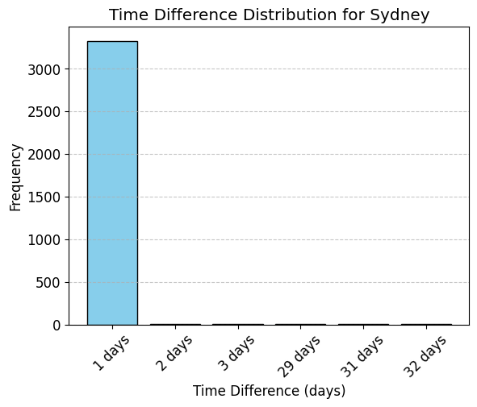
The typical spacing seems to be 1 day for each location but there are several exceptions. We seem to have several missing measurements.
Train/test splits
Remember that we should not be calling the usual train_test_split with shuffling because if we want to forecast, we aren’t allowed to know what happened in the future!
rain_df["Date"].min()Timestamp('2007-11-01 00:00:00')rain_df["Date"].max()Timestamp('2017-06-25 00:00:00')- It looks like we have 10 years of data.
- Let’s use the last 2 years for test.
train_df = rain_df.query("Date <= 20150630")
test_df = rain_df.query("Date > 20150630")len(train_df)107502len(test_df)34691len(test_df) / (len(train_df) + len(test_df))0.24397122221206388As we can see, we’re still using about 25% of our data as test data.
train_df_sort = train_df.query("Location == 'Sydney'").sort_values(by="Date")
test_df_sort = test_df.query("Location == 'Sydney'").sort_values(by="Date")
plt.figure(figsize=(5,4))
plt.plot(train_df_sort["Date"], train_df_sort["Rainfall"], "b", label="train")
plt.plot(test_df_sort["Date"], test_df_sort["Rainfall"], "r", label="test")
plt.xticks(rotation="vertical")
plt.legend()
plt.ylabel("Rainfall (mm)")
plt.title("Train/test rainfall in Sydney");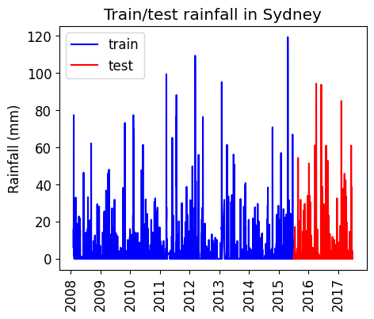
We’re learning relationships from the blue part; predicting only using features in the red part from the day before.
Preprocessing
We have different types of features. So let’s define a preprocessor with a column transformer.
train_df.head()| Date | Location | MinTemp | MaxTemp | Rainfall | Evaporation | Sunshine | WindGustDir | WindGustSpeed | WindDir9am | ... | Humidity9am | Humidity3pm | Pressure9am | Pressure3pm | Cloud9am | Cloud3pm | Temp9am | Temp3pm | RainToday | RainTomorrow | |
|---|---|---|---|---|---|---|---|---|---|---|---|---|---|---|---|---|---|---|---|---|---|
| 0 | 2008-12-01 | Albury | 13.4 | 22.9 | 0.6 | NaN | NaN | W | 44.0 | W | ... | 71.0 | 22.0 | 1007.7 | 1007.1 | 8.0 | NaN | 16.9 | 21.8 | No | No |
| 1 | 2008-12-02 | Albury | 7.4 | 25.1 | 0.0 | NaN | NaN | WNW | 44.0 | NNW | ... | 44.0 | 25.0 | 1010.6 | 1007.8 | NaN | NaN | 17.2 | 24.3 | No | No |
| 2 | 2008-12-03 | Albury | 12.9 | 25.7 | 0.0 | NaN | NaN | WSW | 46.0 | W | ... | 38.0 | 30.0 | 1007.6 | 1008.7 | NaN | 2.0 | 21.0 | 23.2 | No | No |
| 3 | 2008-12-04 | Albury | 9.2 | 28.0 | 0.0 | NaN | NaN | NE | 24.0 | SE | ... | 45.0 | 16.0 | 1017.6 | 1012.8 | NaN | NaN | 18.1 | 26.5 | No | No |
| 4 | 2008-12-05 | Albury | 17.5 | 32.3 | 1.0 | NaN | NaN | W | 41.0 | ENE | ... | 82.0 | 33.0 | 1010.8 | 1006.0 | 7.0 | 8.0 | 17.8 | 29.7 | No | No |
5 rows × 23 columns
train_df.columnsIndex(['Date', 'Location', 'MinTemp', 'MaxTemp', 'Rainfall', 'Evaporation',
'Sunshine', 'WindGustDir', 'WindGustSpeed', 'WindDir9am', 'WindDir3pm',
'WindSpeed9am', 'WindSpeed3pm', 'Humidity9am', 'Humidity3pm',
'Pressure9am', 'Pressure3pm', 'Cloud9am', 'Cloud3pm', 'Temp9am',
'Temp3pm', 'RainToday', 'RainTomorrow'],
dtype='object')train_df.info()<class 'pandas.core.frame.DataFrame'>
Index: 107502 entries, 0 to 144733
Data columns (total 23 columns):
# Column Non-Null Count Dtype
--- ------ -------------- -----
0 Date 107502 non-null datetime64[ns]
1 Location 107502 non-null object
2 MinTemp 107050 non-null float64
3 MaxTemp 107292 non-null float64
4 Rainfall 106424 non-null float64
5 Evaporation 66221 non-null float64
6 Sunshine 62320 non-null float64
7 WindGustDir 100103 non-null object
8 WindGustSpeed 100146 non-null float64
9 WindDir9am 99515 non-null object
10 WindDir3pm 105314 non-null object
11 WindSpeed9am 106322 non-null float64
12 WindSpeed3pm 106319 non-null float64
13 Humidity9am 106112 non-null float64
14 Humidity3pm 106180 non-null float64
15 Pressure9am 97217 non-null float64
16 Pressure3pm 97253 non-null float64
17 Cloud9am 68523 non-null float64
18 Cloud3pm 67501 non-null float64
19 Temp9am 106705 non-null float64
20 Temp3pm 106816 non-null float64
21 RainToday 106424 non-null object
22 RainTomorrow 107502 non-null object
dtypes: datetime64[ns](1), float64(16), object(6)
memory usage: 19.7+ MBWe have missing data.
We have categorical features and numeric features.
Let’s define feature types.
Let’s start with dropping the date column and treating it as a usual supervised machine learning problem.
numeric_features = [
"MinTemp",
"MaxTemp",
"Rainfall",
"Evaporation",
"Sunshine",
"WindGustSpeed",
"WindSpeed9am",
"WindSpeed3pm",
"Humidity9am",
"Humidity3pm",
"Pressure9am",
"Pressure3pm",
"Cloud9am",
"Cloud3pm",
"Temp9am",
"Temp3pm",
]
categorical_features = [
"Location",
"WindGustDir",
"WindDir9am",
"WindDir3pm",
"RainToday",
]
drop_features = ["Date"]
target = ["RainTomorrow"]We’ll be doing feature engineering and preprocessing features several times. So I’ve written a function for preprocessing.
def preprocess_features(
train_df,
test_df,
numeric_features,
categorical_features,
drop_features,
target
):
all_features = set(numeric_features + categorical_features + drop_features + target)
if set(train_df.columns) != all_features:
print("Missing columns", set(train_df.columns) - all_features)
print("Extra columns", all_features - set(train_df.columns))
raise Exception("Columns do not match")
numeric_transformer = make_pipeline(
SimpleImputer(strategy="median"), StandardScaler()
)
categorical_transformer = make_pipeline(
SimpleImputer(strategy="constant", fill_value="missing"),
OneHotEncoder(handle_unknown="ignore", sparse_output=False),
)
preprocessor = make_column_transformer(
(numeric_transformer, numeric_features),
(categorical_transformer, categorical_features),
("drop", drop_features),
)
preprocessor.fit(train_df)
ohe_feature_names = (
preprocessor.named_transformers_["pipeline-2"]
.named_steps["onehotencoder"]
.get_feature_names_out(categorical_features)
.tolist()
)
new_columns = numeric_features + ohe_feature_names
X_train_enc = pd.DataFrame(
preprocessor.transform(train_df), index=train_df.index, columns=new_columns
)
X_test_enc = pd.DataFrame(
preprocessor.transform(test_df), index=test_df.index, columns=new_columns
)
y_train = train_df["RainTomorrow"]
y_test = test_df["RainTomorrow"]
return X_train_enc, y_train, X_test_enc, y_test, preprocessorX_train_enc, y_train, X_test_enc, y_test, preprocessor = preprocess_features(
train_df,
test_df,
numeric_features,
categorical_features,
drop_features, target
)X_train_enc.head()| MinTemp | MaxTemp | Rainfall | Evaporation | Sunshine | WindGustSpeed | WindSpeed9am | WindSpeed3pm | Humidity9am | Humidity3pm | ... | WindDir3pm_SSE | WindDir3pm_SSW | WindDir3pm_SW | WindDir3pm_W | WindDir3pm_WNW | WindDir3pm_WSW | WindDir3pm_missing | RainToday_No | RainToday_Yes | RainToday_missing | |
|---|---|---|---|---|---|---|---|---|---|---|---|---|---|---|---|---|---|---|---|---|---|
| 0 | 0.204302 | -0.027112 | -0.205323 | -0.140641 | 0.160729 | 0.298612 | 0.666166 | 0.599894 | 0.115428 | -1.433514 | ... | 0.0 | 0.0 | 0.0 | 0.0 | 1.0 | 0.0 | 0.0 | 1.0 | 0.0 | 0.0 |
| 1 | -0.741037 | 0.287031 | -0.275008 | -0.140641 | 0.160729 | 0.298612 | -1.125617 | 0.373275 | -1.314929 | -1.288002 | ... | 0.0 | 0.0 | 0.0 | 0.0 | 0.0 | 1.0 | 0.0 | 1.0 | 0.0 | 0.0 |
| 2 | 0.125523 | 0.372706 | -0.275008 | -0.140641 | 0.160729 | 0.450132 | 0.554180 | 0.826513 | -1.632786 | -1.045481 | ... | 0.0 | 0.0 | 0.0 | 0.0 | 0.0 | 1.0 | 0.0 | 1.0 | 0.0 | 0.0 |
| 3 | -0.457435 | 0.701128 | -0.275008 | -0.140641 | 0.160729 | -1.216596 | -0.341712 | -1.099749 | -1.261953 | -1.724539 | ... | 0.0 | 0.0 | 0.0 | 0.0 | 0.0 | 0.0 | 0.0 | 1.0 | 0.0 | 0.0 |
| 4 | 0.850283 | 1.315134 | -0.158867 | -0.140641 | 0.160729 | 0.071330 | -0.789657 | 0.146656 | 0.698167 | -0.899969 | ... | 0.0 | 0.0 | 0.0 | 0.0 | 0.0 | 0.0 | 0.0 | 1.0 | 0.0 | 0.0 |
5 rows × 119 columns
DummyClassifier
dc = DummyClassifier()
dc.fit(X_train_enc, y_train);dc.score(X_train_enc, y_train)0.7750553478074826y_train.value_counts()RainTomorrow
No 83320
Yes 24182
Name: count, dtype: int64dc.score(X_test_enc, y_test)0.7781845435415525LogisticRegression
The function below trains a logistic regression model on the train set, reports train and test scores, and returns learned coefficients as a dataframe.
def score_lr_print_coeff(preprocessor, train_df, y_train, test_df, y_test, X_train_enc):
lr_pipe = make_pipeline(preprocessor, LogisticRegression(max_iter=1000))
lr_pipe.fit(train_df, y_train)
print("Train score: {:.2f}".format(lr_pipe.score(train_df, y_train)))
print("Test score: {:.2f}".format(lr_pipe.score(test_df, y_test)))
lr_coef = pd.DataFrame(
data=lr_pipe.named_steps["logisticregression"].coef_.flatten(),
index=X_train_enc.columns,
columns=["Coef"],
)
return lr_coef.sort_values(by="Coef", ascending=False)score_lr_print_coeff(preprocessor, train_df, y_train, test_df, y_test, X_train_enc)Train score: 0.85
Test score: 0.84| Coef | |
|---|---|
| Humidity3pm | 1.247119 |
| Pressure9am | 0.871094 |
| WindGustSpeed | 0.718524 |
| Location_Witchcliffe | 0.709893 |
| RainToday_missing | 0.651446 |
| ... | ... |
| Location_Townsville | -0.738564 |
| Location_Wollongong | -0.767819 |
| Location_MountGinini | -0.975895 |
| RainToday_No | -0.994764 |
| Pressure3pm | -1.227304 |
119 rows × 1 columns
Cross-validation
- We can carry out cross-validation using
TimeSeriesSplit. - However, things are actually more complicated here because this dataset has multiple time series, one per location.
train_df.sort_values(by=["Date", "Location"]).head()| Date | Location | MinTemp | MaxTemp | Rainfall | Evaporation | Sunshine | WindGustDir | WindGustSpeed | WindDir9am | ... | Humidity9am | Humidity3pm | Pressure9am | Pressure3pm | Cloud9am | Cloud3pm | Temp9am | Temp3pm | RainToday | RainTomorrow | |
|---|---|---|---|---|---|---|---|---|---|---|---|---|---|---|---|---|---|---|---|---|---|
| 45587 | 2007-11-01 | Canberra | 8.0 | 24.3 | 0.0 | 3.4 | 6.3 | NW | 30.0 | SW | ... | 68.0 | 29.0 | 1019.7 | 1015.0 | 7.0 | 7.0 | 14.4 | 23.6 | No | Yes |
| 45588 | 2007-11-02 | Canberra | 14.0 | 26.9 | 3.6 | 4.4 | 9.7 | ENE | 39.0 | E | ... | 80.0 | 36.0 | 1012.4 | 1008.4 | 5.0 | 3.0 | 17.5 | 25.7 | Yes | Yes |
| 45589 | 2007-11-03 | Canberra | 13.7 | 23.4 | 3.6 | 5.8 | 3.3 | NW | 85.0 | N | ... | 82.0 | 69.0 | 1009.5 | 1007.2 | 8.0 | 7.0 | 15.4 | 20.2 | Yes | Yes |
| 45590 | 2007-11-04 | Canberra | 13.3 | 15.5 | 39.8 | 7.2 | 9.1 | NW | 54.0 | WNW | ... | 62.0 | 56.0 | 1005.5 | 1007.0 | 2.0 | 7.0 | 13.5 | 14.1 | Yes | Yes |
| 45591 | 2007-11-05 | Canberra | 7.6 | 16.1 | 2.8 | 5.6 | 10.6 | SSE | 50.0 | SSE | ... | 68.0 | 49.0 | 1018.3 | 1018.5 | 7.0 | 7.0 | 11.1 | 15.4 | Yes | No |
5 rows × 23 columns
- The dataframe is sorted by location and then time.
- Our approach today will be to ignore the fact that we have multiple time series and just OHE the location
- We’ll have multiple measurements for a given timestamp, and that’s OK.
- But,
TimeSeriesSplitexpects the dataframe to be sorted by date so…
train_df_ordered = train_df.sort_values(by=["Date"])
y_train_ordered = train_df_ordered["RainTomorrow"]train_df_ordered| Date | Location | MinTemp | MaxTemp | Rainfall | Evaporation | Sunshine | WindGustDir | WindGustSpeed | WindDir9am | ... | Humidity9am | Humidity3pm | Pressure9am | Pressure3pm | Cloud9am | Cloud3pm | Temp9am | Temp3pm | RainToday | RainTomorrow | |
|---|---|---|---|---|---|---|---|---|---|---|---|---|---|---|---|---|---|---|---|---|---|
| 45587 | 2007-11-01 | Canberra | 8.0 | 24.3 | 0.0 | 3.4 | 6.3 | NW | 30.0 | SW | ... | 68.0 | 29.0 | 1019.7 | 1015.0 | 7.0 | 7.0 | 14.4 | 23.6 | No | Yes |
| 45588 | 2007-11-02 | Canberra | 14.0 | 26.9 | 3.6 | 4.4 | 9.7 | ENE | 39.0 | E | ... | 80.0 | 36.0 | 1012.4 | 1008.4 | 5.0 | 3.0 | 17.5 | 25.7 | Yes | Yes |
| 45589 | 2007-11-03 | Canberra | 13.7 | 23.4 | 3.6 | 5.8 | 3.3 | NW | 85.0 | N | ... | 82.0 | 69.0 | 1009.5 | 1007.2 | 8.0 | 7.0 | 15.4 | 20.2 | Yes | Yes |
| 45590 | 2007-11-04 | Canberra | 13.3 | 15.5 | 39.8 | 7.2 | 9.1 | NW | 54.0 | WNW | ... | 62.0 | 56.0 | 1005.5 | 1007.0 | 2.0 | 7.0 | 13.5 | 14.1 | Yes | Yes |
| 45591 | 2007-11-05 | Canberra | 7.6 | 16.1 | 2.8 | 5.6 | 10.6 | SSE | 50.0 | SSE | ... | 68.0 | 49.0 | 1018.3 | 1018.5 | 7.0 | 7.0 | 11.1 | 15.4 | Yes | No |
| ... | ... | ... | ... | ... | ... | ... | ... | ... | ... | ... | ... | ... | ... | ... | ... | ... | ... | ... | ... | ... | ... |
| 57415 | 2015-06-30 | Ballarat | -0.3 | 10.5 | 0.0 | NaN | NaN | S | 26.0 | NaN | ... | 99.0 | 63.0 | 1029.5 | 1027.7 | NaN | 8.0 | 4.7 | 9.3 | No | No |
| 119911 | 2015-06-30 | PerthAirport | 10.1 | 23.5 | 0.0 | 3.2 | 5.8 | NNE | 31.0 | NE | ... | 48.0 | 33.0 | 1023.6 | 1021.7 | 7.0 | 6.0 | 13.3 | 22.2 | No | No |
| 60455 | 2015-06-30 | Bendigo | 0.3 | 11.4 | 0.0 | NaN | NaN | W | 19.0 | NaN | ... | 89.0 | 56.0 | 1029.3 | 1027.4 | 8.0 | 7.0 | 6.4 | 10.5 | No | No |
| 66473 | 2015-06-30 | MelbourneAirport | 3.2 | 13.2 | 0.0 | 0.8 | 3.9 | N | 20.0 | N | ... | 91.0 | 50.0 | 1029.6 | 1027.3 | 2.0 | 7.0 | 5.3 | 11.9 | No | No |
| 144733 | 2015-06-30 | Uluru | 6.8 | 21.1 | 0.0 | NaN | NaN | ESE | 35.0 | ESE | ... | 81.0 | 35.0 | 1028.6 | 1025.2 | 3.0 | NaN | 10.6 | 20.2 | No | No |
107502 rows × 23 columns
lr_pipe = make_pipeline(preprocessor, LogisticRegression(max_iter=1000))
cross_val_score(lr_pipe, train_df_ordered, y_train_ordered, cv=TimeSeriesSplit()).mean()np.float64(0.8478316682480326)Feature engineering: Encoding date/time as feature(s)
- Can we use the
Dateto help us predict the target? - Probably! E.g. different amounts of rain in different seasons.
- This is feature engineering!
Encoding time as a number
- Idea 1: create a column of “days since Nov 1, 2007”.
train_df = rain_df.query("Date <= 20150630")
test_df = rain_df.query("Date > 20150630")first_day = train_df["Date"].min()
train_df = train_df.assign(
Days_since=train_df["Date"].apply(lambda x: (x - first_day).days)
)
test_df = test_df.assign(
Days_since=test_df["Date"].apply(lambda x: (x - first_day).days)
)train_df.sort_values(by="Date").head()| Date | Location | MinTemp | MaxTemp | Rainfall | Evaporation | Sunshine | WindGustDir | WindGustSpeed | WindDir9am | ... | Humidity3pm | Pressure9am | Pressure3pm | Cloud9am | Cloud3pm | Temp9am | Temp3pm | RainToday | RainTomorrow | Days_since | |
|---|---|---|---|---|---|---|---|---|---|---|---|---|---|---|---|---|---|---|---|---|---|
| 45587 | 2007-11-01 | Canberra | 8.0 | 24.3 | 0.0 | 3.4 | 6.3 | NW | 30.0 | SW | ... | 29.0 | 1019.7 | 1015.0 | 7.0 | 7.0 | 14.4 | 23.6 | No | Yes | 0 |
| 45588 | 2007-11-02 | Canberra | 14.0 | 26.9 | 3.6 | 4.4 | 9.7 | ENE | 39.0 | E | ... | 36.0 | 1012.4 | 1008.4 | 5.0 | 3.0 | 17.5 | 25.7 | Yes | Yes | 1 |
| 45589 | 2007-11-03 | Canberra | 13.7 | 23.4 | 3.6 | 5.8 | 3.3 | NW | 85.0 | N | ... | 69.0 | 1009.5 | 1007.2 | 8.0 | 7.0 | 15.4 | 20.2 | Yes | Yes | 2 |
| 45590 | 2007-11-04 | Canberra | 13.3 | 15.5 | 39.8 | 7.2 | 9.1 | NW | 54.0 | WNW | ... | 56.0 | 1005.5 | 1007.0 | 2.0 | 7.0 | 13.5 | 14.1 | Yes | Yes | 3 |
| 45591 | 2007-11-05 | Canberra | 7.6 | 16.1 | 2.8 | 5.6 | 10.6 | SSE | 50.0 | SSE | ... | 49.0 | 1018.3 | 1018.5 | 7.0 | 7.0 | 11.1 | 15.4 | Yes | No | 4 |
5 rows × 24 columns
X_train_enc, y_train, X_test_enc, y_test, preprocessor = preprocess_features(
train_df,
test_df,
numeric_features + ["Days_since"],
categorical_features,
drop_features,
target
)score_lr_print_coeff(preprocessor, train_df, y_train, test_df, y_test, X_train_enc)Train score: 0.85
Test score: 0.84| Coef | |
|---|---|
| Humidity3pm | 1.242381 |
| Pressure9am | 0.854749 |
| WindGustSpeed | 0.720904 |
| Location_Witchcliffe | 0.693890 |
| RainToday_missing | 0.641216 |
| ... | ... |
| Location_Townsville | -0.734816 |
| Location_Wollongong | -0.760678 |
| RainToday_No | -0.990754 |
| Location_MountGinini | -0.999577 |
| Pressure3pm | -1.210779 |
120 rows × 1 columns
- Not much improvement in the scores
- Can you think of other ways to generate features from the
Datecolumn? - What about the month - that seems relevant. How should we encode the month?
Encode it as a categorical variable?
One-hot encoding of the month
train_df = rain_df.query("Date <= 20150630")
test_df = rain_df.query("Date > 20150630")train_df = train_df.assign(
Month=train_df["Date"].apply(lambda x: x.month_name())
) # x.month_name() to get the actual string
test_df = test_df.assign(Month=test_df["Date"].apply(lambda x: x.month_name()))train_df[["Date", "Month"]].sort_values(by="Month")| Date | Month | |
|---|---|---|
| 62657 | 2013-04-14 | April |
| 115089 | 2010-04-15 | April |
| 115090 | 2010-04-16 | April |
| 115091 | 2010-04-17 | April |
| 115092 | 2010-04-18 | April |
| ... | ... | ... |
| 128828 | 2014-09-20 | September |
| 128829 | 2014-09-21 | September |
| 128830 | 2014-09-22 | September |
| 128820 | 2014-09-12 | September |
| 72036 | 2013-09-29 | September |
107502 rows × 2 columns
X_train_enc, y_train, X_test_enc, y_test, preprocessor = preprocess_features(
train_df, test_df,
numeric_features,
categorical_features + ["Month"],
drop_features,
target
)score_lr_print_coeff(preprocessor, train_df, y_train, test_df, y_test, X_train_enc)Train score: 0.85
Test score: 0.84| Coef | |
|---|---|
| Humidity3pm | 1.271287 |
| Pressure9am | 0.805342 |
| Location_Witchcliffe | 0.727014 |
| WindGustSpeed | 0.706966 |
| RainToday_missing | 0.667450 |
| ... | ... |
| Location_MountGinini | -0.774261 |
| Location_Katherine | -0.889921 |
| Location_Townsville | -0.905327 |
| RainToday_No | -0.981195 |
| Pressure3pm | -1.187503 |
131 rows × 1 columns
No change in the results.
One-hot encoding seasons
How about just summer/winter as a feature?
def get_season(month):
# remember this is Australia
WINTER_MONTHS = ["June", "July", "August"]
AUTUMN_MONTHS = ["March", "April", "May"]
SUMMER_MONTHS = ["December", "January", "February"]
SPRING_MONTHS = ["September", "October", "November"]
if month in WINTER_MONTHS:
return "Winter"
elif month in AUTUMN_MONTHS:
return "Autumn"
elif month in SUMMER_MONTHS:
return "Summer"
else:
return "Fall"train_df = train_df.assign(Season=train_df["Month"].apply(get_season))
test_df = test_df.assign(Season=test_df["Month"].apply(get_season))train_df| Date | Location | MinTemp | MaxTemp | Rainfall | Evaporation | Sunshine | WindGustDir | WindGustSpeed | WindDir9am | ... | Pressure9am | Pressure3pm | Cloud9am | Cloud3pm | Temp9am | Temp3pm | RainToday | RainTomorrow | Month | Season | |
|---|---|---|---|---|---|---|---|---|---|---|---|---|---|---|---|---|---|---|---|---|---|
| 0 | 2008-12-01 | Albury | 13.4 | 22.9 | 0.6 | NaN | NaN | W | 44.0 | W | ... | 1007.7 | 1007.1 | 8.0 | NaN | 16.9 | 21.8 | No | No | December | Summer |
| 1 | 2008-12-02 | Albury | 7.4 | 25.1 | 0.0 | NaN | NaN | WNW | 44.0 | NNW | ... | 1010.6 | 1007.8 | NaN | NaN | 17.2 | 24.3 | No | No | December | Summer |
| 2 | 2008-12-03 | Albury | 12.9 | 25.7 | 0.0 | NaN | NaN | WSW | 46.0 | W | ... | 1007.6 | 1008.7 | NaN | 2.0 | 21.0 | 23.2 | No | No | December | Summer |
| 3 | 2008-12-04 | Albury | 9.2 | 28.0 | 0.0 | NaN | NaN | NE | 24.0 | SE | ... | 1017.6 | 1012.8 | NaN | NaN | 18.1 | 26.5 | No | No | December | Summer |
| 4 | 2008-12-05 | Albury | 17.5 | 32.3 | 1.0 | NaN | NaN | W | 41.0 | ENE | ... | 1010.8 | 1006.0 | 7.0 | 8.0 | 17.8 | 29.7 | No | No | December | Summer |
| ... | ... | ... | ... | ... | ... | ... | ... | ... | ... | ... | ... | ... | ... | ... | ... | ... | ... | ... | ... | ... | ... |
| 144729 | 2015-06-26 | Uluru | 3.8 | 18.3 | 0.0 | NaN | NaN | E | 39.0 | ESE | ... | 1031.5 | 1027.6 | NaN | NaN | 8.8 | 17.2 | No | No | June | Winter |
| 144730 | 2015-06-27 | Uluru | 2.5 | 17.1 | 0.0 | NaN | NaN | E | 41.0 | ESE | ... | 1029.9 | 1026.0 | NaN | NaN | 7.0 | 15.7 | No | No | June | Winter |
| 144731 | 2015-06-28 | Uluru | 4.5 | 19.6 | 0.0 | NaN | NaN | ENE | 35.0 | ESE | ... | 1028.7 | 1025.0 | NaN | 3.0 | 8.9 | 18.0 | No | No | June | Winter |
| 144732 | 2015-06-29 | Uluru | 7.6 | 22.0 | 0.0 | NaN | NaN | ESE | 33.0 | SE | ... | 1027.2 | 1023.8 | 6.0 | 7.0 | 11.7 | 21.5 | No | No | June | Winter |
| 144733 | 2015-06-30 | Uluru | 6.8 | 21.1 | 0.0 | NaN | NaN | ESE | 35.0 | ESE | ... | 1028.6 | 1025.2 | 3.0 | NaN | 10.6 | 20.2 | No | No | June | Winter |
107502 rows × 25 columns
X_train_enc, y_train, X_test_enc, y_test, preprocessor = preprocess_features(
train_df,
test_df,
numeric_features,
categorical_features + ["Season"],
drop_features + ["Month"],
target
)X_train_enc.columnsIndex(['MinTemp', 'MaxTemp', 'Rainfall', 'Evaporation', 'Sunshine',
'WindGustSpeed', 'WindSpeed9am', 'WindSpeed3pm', 'Humidity9am',
'Humidity3pm',
...
'WindDir3pm_WNW', 'WindDir3pm_WSW', 'WindDir3pm_missing',
'RainToday_No', 'RainToday_Yes', 'RainToday_missing', 'Season_Autumn',
'Season_Fall', 'Season_Summer', 'Season_Winter'],
dtype='object', length=123)coeff_df = score_lr_print_coeff(
preprocessor, train_df, y_train, test_df, y_test, X_train_enc
)Train score: 0.85
Test score: 0.84coeff_df.loc[["Season_Fall", "Season_Summer", "Season_Winter", "Season_Autumn"]]| Coef | |
|---|---|
| Season_Fall | -0.117712 |
| Season_Summer | -0.401102 |
| Season_Winter | -0.075170 |
| Season_Autumn | -0.132886 |
- No improvements in the scores but the coefficients make some sense,
- A negative coefficient for summer and a positive coefficients for winter.
train_df.plot(x="Date", y="Rainfall")
plt.ylabel("Rainfall (mm)");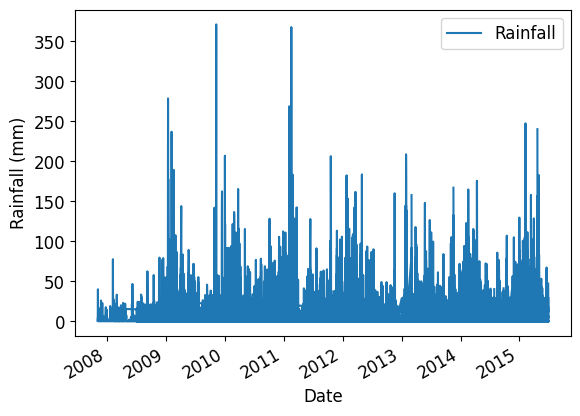
Lag-based features
train_df = rain_df.query("Date <= 20150630")
test_df = rain_df.query("Date > 20150630")train_df.head()| Date | Location | MinTemp | MaxTemp | Rainfall | Evaporation | Sunshine | WindGustDir | WindGustSpeed | WindDir9am | ... | Humidity9am | Humidity3pm | Pressure9am | Pressure3pm | Cloud9am | Cloud3pm | Temp9am | Temp3pm | RainToday | RainTomorrow | |
|---|---|---|---|---|---|---|---|---|---|---|---|---|---|---|---|---|---|---|---|---|---|
| 0 | 2008-12-01 | Albury | 13.4 | 22.9 | 0.6 | NaN | NaN | W | 44.0 | W | ... | 71.0 | 22.0 | 1007.7 | 1007.1 | 8.0 | NaN | 16.9 | 21.8 | No | No |
| 1 | 2008-12-02 | Albury | 7.4 | 25.1 | 0.0 | NaN | NaN | WNW | 44.0 | NNW | ... | 44.0 | 25.0 | 1010.6 | 1007.8 | NaN | NaN | 17.2 | 24.3 | No | No |
| 2 | 2008-12-03 | Albury | 12.9 | 25.7 | 0.0 | NaN | NaN | WSW | 46.0 | W | ... | 38.0 | 30.0 | 1007.6 | 1008.7 | NaN | 2.0 | 21.0 | 23.2 | No | No |
| 3 | 2008-12-04 | Albury | 9.2 | 28.0 | 0.0 | NaN | NaN | NE | 24.0 | SE | ... | 45.0 | 16.0 | 1017.6 | 1012.8 | NaN | NaN | 18.1 | 26.5 | No | No |
| 4 | 2008-12-05 | Albury | 17.5 | 32.3 | 1.0 | NaN | NaN | W | 41.0 | ENE | ... | 82.0 | 33.0 | 1010.8 | 1006.0 | 7.0 | 8.0 | 17.8 | 29.7 | No | No |
5 rows × 23 columns
- It looks like the dataframe is already sorted by Location and then by date for each Location.
- We could have done this ourselves with:
# train_df.sort_values(by=["Location", "Date"])But make sure to also sort the targets (i.e. do this before preprocessing).
We can “lag” (or “shift”) a time series in Pandas with the .shift() method.
train_df = train_df.assign(Rainfall_lag1=train_df["Rainfall"].shift(1))train_df[["Date", "Location", "Rainfall", "Rainfall_lag1"]][:20]| Date | Location | Rainfall | Rainfall_lag1 | |
|---|---|---|---|---|
| 0 | 2008-12-01 | Albury | 0.6 | NaN |
| 1 | 2008-12-02 | Albury | 0.0 | 0.6 |
| 2 | 2008-12-03 | Albury | 0.0 | 0.0 |
| 3 | 2008-12-04 | Albury | 0.0 | 0.0 |
| 4 | 2008-12-05 | Albury | 1.0 | 0.0 |
| 5 | 2008-12-06 | Albury | 0.2 | 1.0 |
| 6 | 2008-12-07 | Albury | 0.0 | 0.2 |
| 7 | 2008-12-08 | Albury | 0.0 | 0.0 |
| 8 | 2008-12-09 | Albury | 0.0 | 0.0 |
| 9 | 2008-12-10 | Albury | 1.4 | 0.0 |
| 10 | 2008-12-11 | Albury | 0.0 | 1.4 |
| 11 | 2008-12-12 | Albury | 2.2 | 0.0 |
| 12 | 2008-12-13 | Albury | 15.6 | 2.2 |
| 13 | 2008-12-14 | Albury | 3.6 | 15.6 |
| 15 | 2008-12-16 | Albury | NaN | 3.6 |
| 16 | 2008-12-17 | Albury | 0.0 | NaN |
| 17 | 2008-12-18 | Albury | 16.8 | 0.0 |
| 18 | 2008-12-19 | Albury | 10.6 | 16.8 |
| 19 | 2008-12-20 | Albury | 0.0 | 10.6 |
| 20 | 2008-12-21 | Albury | 0.0 | 0.0 |
- But we have multiple time series here and we need to be more careful with this.
- When we switch from one location to another we do not want to take the value from the previous location.
def create_lag_feature(df, orig_feature, lag):
"""Creates a new df with a new feature that's a lagged version of the original, where lag is an int."""
# note: pandas .shift() kind of does this for you already, but oh well I already wrote this code
new_df = df.copy()
new_feature_name = "%s_lag%d" % (orig_feature, lag)
new_df[new_feature_name] = np.nan
for location, df_location in new_df.groupby(
"Location"
): # Each location is its own time series
new_df.loc[df_location.index[lag:], new_feature_name] = df_location.iloc[:-lag][
orig_feature
].values
return new_dftrain_df = create_lag_feature(train_df, "Rainfall", 1)train_df[["Date", "Location", "Rainfall", "Rainfall_lag1"]][2285:2295]| Date | Location | Rainfall | Rainfall_lag1 | |
|---|---|---|---|---|
| 2309 | 2015-06-26 | Albury | 0.2 | 1.0 |
| 2310 | 2015-06-27 | Albury | 0.0 | 0.2 |
| 2311 | 2015-06-28 | Albury | 0.2 | 0.0 |
| 2312 | 2015-06-29 | Albury | 0.0 | 0.2 |
| 2313 | 2015-06-30 | Albury | 0.0 | 0.0 |
| 3040 | 2009-01-01 | BadgerysCreek | 0.0 | NaN |
| 3041 | 2009-01-02 | BadgerysCreek | 0.0 | 0.0 |
| 3042 | 2009-01-03 | BadgerysCreek | 0.0 | 0.0 |
| 3043 | 2009-01-04 | BadgerysCreek | 0.0 | 0.0 |
| 3044 | 2009-01-05 | BadgerysCreek | 0.0 | 0.0 |
Now it looks good!
- Question: is it OK to do this to the test set? Discuss.
- It’s fine if you would have this information available in deployment.
- If we’re just forecasting the next day, we should.
- Let’s include it for now.
rain_df_modified = create_lag_feature(rain_df, "Rainfall", 1)
train_df = rain_df_modified.query("Date <= 20150630")
test_df = rain_df_modified.query("Date > 20150630")rain_df_modified| Date | Location | MinTemp | MaxTemp | Rainfall | Evaporation | Sunshine | WindGustDir | WindGustSpeed | WindDir9am | ... | Humidity3pm | Pressure9am | Pressure3pm | Cloud9am | Cloud3pm | Temp9am | Temp3pm | RainToday | RainTomorrow | Rainfall_lag1 | |
|---|---|---|---|---|---|---|---|---|---|---|---|---|---|---|---|---|---|---|---|---|---|
| 0 | 2008-12-01 | Albury | 13.4 | 22.9 | 0.6 | NaN | NaN | W | 44.0 | W | ... | 22.0 | 1007.7 | 1007.1 | 8.0 | NaN | 16.9 | 21.8 | No | No | NaN |
| 1 | 2008-12-02 | Albury | 7.4 | 25.1 | 0.0 | NaN | NaN | WNW | 44.0 | NNW | ... | 25.0 | 1010.6 | 1007.8 | NaN | NaN | 17.2 | 24.3 | No | No | 0.6 |
| 2 | 2008-12-03 | Albury | 12.9 | 25.7 | 0.0 | NaN | NaN | WSW | 46.0 | W | ... | 30.0 | 1007.6 | 1008.7 | NaN | 2.0 | 21.0 | 23.2 | No | No | 0.0 |
| 3 | 2008-12-04 | Albury | 9.2 | 28.0 | 0.0 | NaN | NaN | NE | 24.0 | SE | ... | 16.0 | 1017.6 | 1012.8 | NaN | NaN | 18.1 | 26.5 | No | No | 0.0 |
| 4 | 2008-12-05 | Albury | 17.5 | 32.3 | 1.0 | NaN | NaN | W | 41.0 | ENE | ... | 33.0 | 1010.8 | 1006.0 | 7.0 | 8.0 | 17.8 | 29.7 | No | No | 0.0 |
| ... | ... | ... | ... | ... | ... | ... | ... | ... | ... | ... | ... | ... | ... | ... | ... | ... | ... | ... | ... | ... | ... |
| 145454 | 2017-06-20 | Uluru | 3.5 | 21.8 | 0.0 | NaN | NaN | E | 31.0 | ESE | ... | 27.0 | 1024.7 | 1021.2 | NaN | NaN | 9.4 | 20.9 | No | No | 0.0 |
| 145455 | 2017-06-21 | Uluru | 2.8 | 23.4 | 0.0 | NaN | NaN | E | 31.0 | SE | ... | 24.0 | 1024.6 | 1020.3 | NaN | NaN | 10.1 | 22.4 | No | No | 0.0 |
| 145456 | 2017-06-22 | Uluru | 3.6 | 25.3 | 0.0 | NaN | NaN | NNW | 22.0 | SE | ... | 21.0 | 1023.5 | 1019.1 | NaN | NaN | 10.9 | 24.5 | No | No | 0.0 |
| 145457 | 2017-06-23 | Uluru | 5.4 | 26.9 | 0.0 | NaN | NaN | N | 37.0 | SE | ... | 24.0 | 1021.0 | 1016.8 | NaN | NaN | 12.5 | 26.1 | No | No | 0.0 |
| 145458 | 2017-06-24 | Uluru | 7.8 | 27.0 | 0.0 | NaN | NaN | SE | 28.0 | SSE | ... | 24.0 | 1019.4 | 1016.5 | 3.0 | 2.0 | 15.1 | 26.0 | No | No | 0.0 |
142193 rows × 24 columns
X_train_enc, y_train, X_test_enc, y_test, preprocessor = preprocess_features(
train_df,
test_df,
numeric_features + ["Rainfall_lag1"],
categorical_features,
drop_features,
target
)lr_coef = score_lr_print_coeff(
preprocessor, train_df, y_train, test_df, y_test, X_train_enc
)Train score: 0.85
Test score: 0.84lr_coef.loc[["Rainfall", "Rainfall_lag1"]]| Coef | |
|---|---|
| Rainfall | 0.081292 |
| Rainfall_lag1 | 0.008040 |
Rainfall from today has a positive coefficient.
Rainfall from yesterday has a positive but a smaller coefficient.
If we didn’t have rainfall from today feature, rainfall from yesterday feature would have received a bigger coefficient.
We could also create a lagged version of the target.
In fact, this dataset already has that built in!
RainTodayis the lagged version of the targetRainTomorrow.We could also create lagged version of other features, or more lags
rain_df_modified = create_lag_feature(rain_df, "Rainfall", 1)
rain_df_modified = create_lag_feature(rain_df_modified, "Rainfall", 2)
rain_df_modified = create_lag_feature(rain_df_modified, "Rainfall", 3)
rain_df_modified = create_lag_feature(rain_df_modified, "Humidity3pm", 1)rain_df_modified[
[
"Date",
"Location",
"Rainfall",
"Rainfall_lag1",
"Rainfall_lag2",
"Rainfall_lag3",
"Humidity3pm",
"Humidity3pm_lag1",
]
].head(10)| Date | Location | Rainfall | Rainfall_lag1 | Rainfall_lag2 | Rainfall_lag3 | Humidity3pm | Humidity3pm_lag1 | |
|---|---|---|---|---|---|---|---|---|
| 0 | 2008-12-01 | Albury | 0.6 | NaN | NaN | NaN | 22.0 | NaN |
| 1 | 2008-12-02 | Albury | 0.0 | 0.6 | NaN | NaN | 25.0 | 22.0 |
| 2 | 2008-12-03 | Albury | 0.0 | 0.0 | 0.6 | NaN | 30.0 | 25.0 |
| 3 | 2008-12-04 | Albury | 0.0 | 0.0 | 0.0 | 0.6 | 16.0 | 30.0 |
| 4 | 2008-12-05 | Albury | 1.0 | 0.0 | 0.0 | 0.0 | 33.0 | 16.0 |
| 5 | 2008-12-06 | Albury | 0.2 | 1.0 | 0.0 | 0.0 | 23.0 | 33.0 |
| 6 | 2008-12-07 | Albury | 0.0 | 0.2 | 1.0 | 0.0 | 19.0 | 23.0 |
| 7 | 2008-12-08 | Albury | 0.0 | 0.0 | 0.2 | 1.0 | 19.0 | 19.0 |
| 8 | 2008-12-09 | Albury | 0.0 | 0.0 | 0.0 | 0.2 | 9.0 | 19.0 |
| 9 | 2008-12-10 | Albury | 1.4 | 0.0 | 0.0 | 0.0 | 27.0 | 9.0 |
Note the pattern of NaN values.
train_df = rain_df_modified.query("Date <= 20150630")
test_df = rain_df_modified.query("Date > 20150630")X_train_enc, y_train, X_test_enc, y_test, preprocessor = preprocess_features(
train_df,
test_df,
numeric_features
+ ["Rainfall_lag1", "Rainfall_lag2", "Rainfall_lag3", "Humidity3pm_lag1"],
categorical_features,
drop_features,
target
)lr_coef = score_lr_print_coeff(
preprocessor, train_df, y_train, test_df, y_test, X_train_enc
)Train score: 0.85
Test score: 0.85lr_coef.loc[
[
"Rainfall",
"Rainfall_lag1",
"Rainfall_lag2",
"Rainfall_lag3",
"Humidity3pm",
"Humidity3pm_lag1",
]
]| Coef | |
|---|---|
| Rainfall | 0.107917 |
| Rainfall_lag1 | 0.023105 |
| Rainfall_lag2 | 0.018434 |
| Rainfall_lag3 | 0.017829 |
| Humidity3pm | 1.278441 |
| Humidity3pm_lag1 | -0.266120 |
Note the pattern in the magnitude of the coefficients.
Final remarks
What did we not cover?
- A huge amount!
Traditional time series approaches
- Time series analysis is a huge field of its own
- Traditional approaches include the ARIMA model and its various components/extensions.
- In Python, the statsmodels package is the place to go for this sort of thing.
- For example, statsmodels.tsa.arima_model.ARIMA.
- These approaches can forecast, but they are also very good for understanding the temporal relationships in your data.
- We took different route in this course, and stick to our supervised learning tools.
Deep learning
- Recently, deep learning has been very successful too.
- In particular, recurrent neural networks (RNNs).
Types of problems involving time series
- A single label associated with an entire time series.
- We had that with images earlier on, you could have the same for a time series.
- E.g., for fraud detection, labelling each transaction as fraud/normal vs. labelling a person as bad/good based on their entire history.
- There are various approaches that can be used for this type of problem, including CNNs (Lecture 19), LSTMs, and non deep learning methods.
- Inference problems
- What are the patterns in this time series?
- How many lags are associated with the current value?
- Etc.
Unequally spaced time points
- We assumed we have a measurement each day.
- For example, when creating lag features we used consecutive rows in the DataFrame.
- But, in fact some days were missing in this dataset.
- More generally, what if the measurements are at arbitrary times, not equally spaced?
- Some of our approaches would still work, like encoding the month.
- Some of our approaches would not make sense, like the lags.
- Perhaps the measurements could be binned into equally spaced bins, or something.
- This is more of a hassle.
Other software package
Feature engineering
- Often, a useful approach is to just engineer your own features.
- E.g., max expenditure, min expenditure, max-min, avg time gap between transactions, variance of time gap between transactions, etc etc.
- We could do that here as well, or in any problem.